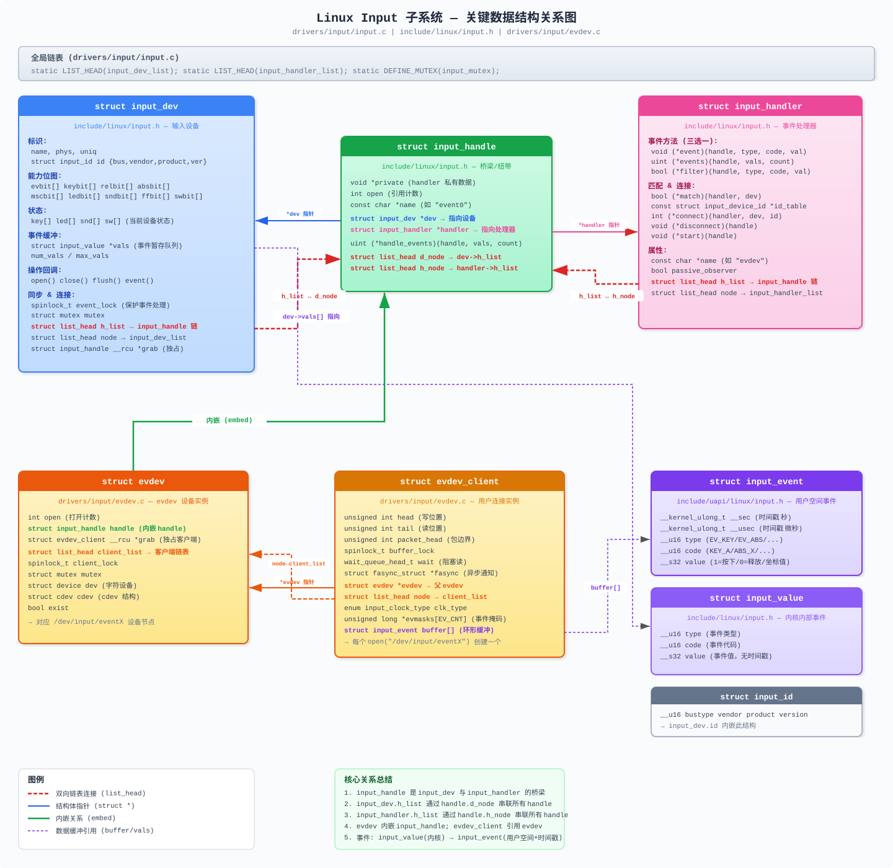
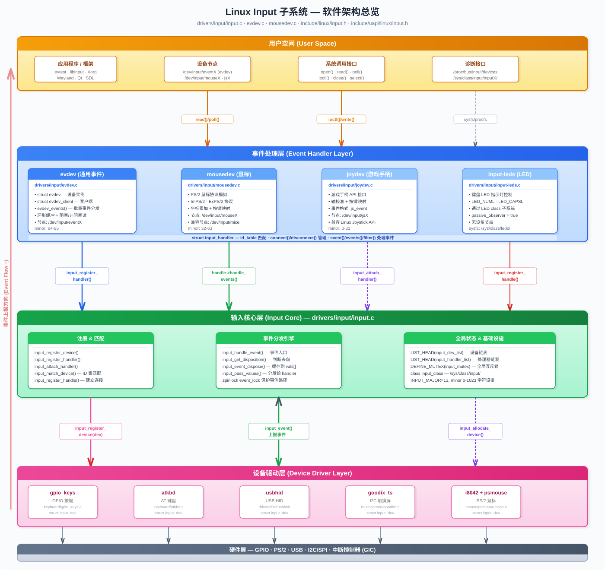

基于 linux-6.18.1 内核源码，全面分析 Input 子系统的关键数据结构、软件框架、初始化路径，并提供带注释的实例。
Linux Input 子系统采用三层架构，将输入设备驱动与用户空间接口解耦：
┌─────────────────────────────────────────────────────────┐
│ 用户空间 (User Space) │
│ /dev/input/event0 /dev/input/mouse0 ... │
│ read() / poll() / ioctl() │
└────────────────────────┬────────────────────────────────┘
│
┌────────────────────────▼────────────────────────────────┐
│ 事件处理层 (Handler Layer) │
│ evdev mousedev joydev input-leds │
│ (通用事件) (鼠标协议) (游戏手柄) (LED反馈) │
│ │
│ struct input_handler ←→ struct input_handle │
└────────────────────────┬────────────────────────────────┘
│
┌────────────────────────▼────────────────────────────────┐
│ 输入核心层 (Input Core) │
│ drivers/input/input.c │
│ │
│ • 设备/处理器注册管理 │
│ • 设备与处理器的匹配连接 │
│ • 事件分发调度 │
│ • /proc/bus/input/ 接口 │
│ • 字符设备主号 13 (INPUT_MAJOR) 管理 │
└────────────────────────┬────────────────────────────────┘
│
┌────────────────────────▼────────────────────────────────┐
│ 设备驱动层 (Device Driver Layer) │
│ gpio_keys atkbd i8042 usbhid goodix_ts │
│ (GPIO按键) (AT键盘) (PS/2控制器) (USB HID) (触摸屏) │
│ │
│ struct input_dev │
└─────────────────────────────────────────────────────────┘核心源文件分布：
| 文件 | 说明 |
|---|---|
drivers/input/input.c |
Input 核心实现 |
drivers/input/evdev.c |
通用事件设备处理器 |
drivers/input/mousedev.c |
鼠标设备处理器 |
drivers/input/joydev.c |
游戏手柄设备处理器 |
drivers/input/input-mt.c |
多点触摸支持 |
drivers/input/input-poller.c |
轮询式输入设备支持 |
include/linux/input.h |
内核态头文件 |
include/uapi/linux/input.h |
用户空间接口头文件 |
include/uapi/linux/input-event-codes.h |
事件类型与代码定义 |
下图展示了 Input 子系统核心数据结构之间的引用、内嵌和链表连接关系：

关系要点：
input_handle 是 input_dev 与 input_handler 之间的桥梁，通过双向链表 (d_node / h_node) 分别挂在设备和处理器上evdev 内嵌一个 input_handle，每个 /dev/input/eventX 对应一个 evdev 实例open() 设备节点时创建一个 evdev_client，其环形缓冲区存储 struct input_eventstruct input_value（无时间戳），传递给用户空间时转换为 struct input_event（含时间戳）定义：include/linux/input.h
每个物理输入设备（键盘、鼠标、触摸屏等）对应一个 input_dev 实例。
struct input_dev {
/* ===== 设备标识 ===== */
const char *name; // 设备名称，如 "gpio-keys"
const char *phys; // 物理路径，如 "usb-0000:00:14.0-1/input0"
const char *uniq; // 唯一标识符（如蓝牙设备的 MAC 地址）
struct input_id id; // 设备 ID（bustype, vendor, product, version）
/* ===== 能力位图 (Capability Bitmaps) ===== */
unsigned long propbit[BITS_TO_LONGS(INPUT_PROP_CNT)]; // 设备属性（如 INPUT_PROP_DIRECT）
unsigned long evbit[BITS_TO_LONGS(EV_CNT)]; // 支持的事件类型（EV_KEY/EV_REL/EV_ABS...）
unsigned long keybit[BITS_TO_LONGS(KEY_CNT)]; // 支持的按键/按钮
unsigned long relbit[BITS_TO_LONGS(REL_CNT)]; // 支持的相对轴（鼠标移动）
unsigned long absbit[BITS_TO_LONGS(ABS_CNT)]; // 支持的绝对轴（触摸屏坐标）
unsigned long mscbit[BITS_TO_LONGS(MSC_CNT)]; // 杂项事件
unsigned long ledbit[BITS_TO_LONGS(LED_CNT)]; // LED 指示灯
unsigned long sndbit[BITS_TO_LONGS(SND_CNT)]; // 声音效果
unsigned long ffbit[BITS_TO_LONGS(FF_CNT)]; // 力反馈效果
unsigned long swbit[BITS_TO_LONGS(SW_CNT)]; // 开关（如合盖检测）
/* ===== 设备当前状态 ===== */
unsigned long key[BITS_TO_LONGS(KEY_CNT)]; // 当前按键按下状态
unsigned long led[BITS_TO_LONGS(LED_CNT)]; // 当前 LED 状态
unsigned long snd[BITS_TO_LONGS(SND_CNT)]; // 当前声音状态
unsigned long sw[BITS_TO_LONGS(SW_CNT)]; // 当前开关状态
/* ===== 键码映射 ===== */
void *keycode; // 扫描码→键码映射表
unsigned int keycodemax; // 映射表最大索引
unsigned int keycodesize; // 每个键码元素的字节大小
int (*getkeycode)(...); // 获取键码回调
int (*setkeycode)(...); // 设置键码回调
/* ===== 绝对轴信息 ===== */
struct input_absinfo *absinfo; // 绝对轴参数数组（min/max/fuzz/flat/resolution）
/* ===== 事件队列 ===== */
unsigned int num_vals; // 当前队列中的事件数
unsigned int max_vals; // 队列最大容量
struct input_value *vals; // 事件值缓冲区
/* ===== 自动重复 ===== */
int rep[REP_CNT]; // rep[0]=REP_DELAY(ms), rep[1]=REP_PERIOD(ms)
unsigned int repeat_key; // 正在重复的键码
struct timer_list timer; // 自动重复定时器
/* ===== 设备操作回调 ===== */
int (*open)(struct input_dev *dev); // 第一个用户打开时调用
void (*close)(struct input_dev *dev); // 最后一个用户关闭时调用
int (*flush)(struct input_dev *dev, struct file *file); // 刷新设备状态
int (*event)(struct input_dev *dev, unsigned int type,
unsigned int code, int value); // 事件反馈（如控制 LED）
/* ===== 力反馈 ===== */
struct ff_device *ff; // 力反馈设备结构
/* ===== 轮询支持 ===== */
struct input_dev_poller *poller; // 轮询机制
/* ===== 多点触摸 ===== */
struct input_mt *mt; // 多点触摸插槽数据
/* ===== 同步与保护 ===== */
spinlock_t event_lock; // 保护事件处理（中断上下文使用）
struct mutex mutex; // 保护 open/close/flush 操作
/* ===== 用户与状态追踪 ===== */
unsigned int users; // 打开此设备的 handler 数
struct input_handle __rcu *grab; // 独占抓取的 handle
bool going_away; // 设备正在注销
bool inhibited; // 设备被抑制（事件被忽略）
/* ===== Linux 设备模型 ===== */
struct device dev; // 内嵌 device 结构
struct list_head h_list; // 附加到此设备的 handle 链表
struct list_head node; // 全局 input_dev_list 链表节点
/* ===== 时间戳 ===== */
ktime_t timestamp[INPUT_CLK_MAX]; // REAL/MONOTONIC/BOOT 时钟时间戳
};核心关系： input_dev 通过 h_list 链表连接多个 input_handle，每个 handle 关联一个 input_handler。
定义：include/linux/input.h
事件处理器实现对输入事件的具体处理逻辑，如将事件传递给用户空间。
struct input_handler {
void *private; // 处理器私有数据
/* ===== 事件处理方法（三选一） ===== */
void (*event)(struct input_handle *handle,
unsigned int type, unsigned int code, int value);
// 单事件回调（最简单）
unsigned int (*events)(struct input_handle *handle,
struct input_value *vals, unsigned int count);
// 批量事件回调（最高效，如 evdev 使用此接口）
bool (*filter)(struct input_handle *handle,
unsigned int type, unsigned int code, int value);
// 过滤回调（返回 true 表示过滤/丢弃事件）
/* ===== 设备匹配 ===== */
bool (*match)(struct input_handler *handler, struct input_dev *dev);
// 在 id_table 匹配成功后的精细匹配
const struct input_device_id *id_table;
// 设备 ID 匹配表（以空条目结尾）
/* ===== 连接生命周期 ===== */
int (*connect)(struct input_handler *handler, struct input_dev *dev,
const struct input_device_id *id);
// 设备匹配后的连接回调
void (*disconnect)(struct input_handle *handle);
// 断开连接回调
void (*start)(struct input_handle *handle);
// 连接完成后的启动回调
/* ===== 标志与属性 ===== */
bool passive_observer; // 仅观察事件，不触发设备 open
bool legacy_minors; // 使用旧版次设备号范围
int minor; // 旧版次设备号起始值
const char *name; // 处理器名称
/* ===== 链表节点 ===== */
struct list_head h_list; // 此处理器拥有的 handle 链表
struct list_head node; // 全局 input_handler_list 链表节点
};内核内置处理器：
| Handler | 名称 | 功能 | 设备节点 |
|---|---|---|---|
| evdev | "evdev" | 通用事件接口 | /dev/input/eventX |
| mousedev | "mousedev" | PS/2 鼠标协议 | /dev/input/mouseX |
| joydev | "joydev" | 游戏手柄接口 | /dev/input/jsX |
| input-leds | "leds" | LED 反馈 | sysfs LED 类 |
定义：include/linux/input.h
input_handle 是 input_dev 和 input_handler 之间的连接纽带，一个设备可以有多个 handle（连接多个处理器），一个处理器也可以有多个 handle（处理多个设备）。
struct input_handle {
void *private; // 处理器为此连接分配的私有数据
int open; // 引用计数（open/close 追踪）
const char *name; // 名称（如 "event0", "mouse0"）
struct input_dev *dev; // 指向输入设备
struct input_handler *handler;// 指向事件处理器
unsigned int (*handle_events)(struct input_handle *handle,
struct input_value *vals,
unsigned int count);
// 由 input core 根据 handler 的方法自动设置
struct list_head d_node; // 设备的 h_list 中的节点
struct list_head h_node; // 处理器的 h_list 中的节点
};三者的关系图：
input_dev_list (全局) input_handler_list (全局)
┌────────┐ ┌────────────┐
│input_dev│ │input_handler│
│ (键盘) │ │ (evdev) │
│ │ input_handle │ │
│ h_list ─┼───►┌──────────┐◄────────┼─ h_list │
│ │ │ d_node │ │ │
│ │ │ h_node │ │ │
│ │ │ *dev ────┼─────────┼→ │
│ │ │ *handler─┼────► │ │
└────┬───┘ └──────────┘ └─────┬──────┘
│ │
│ input_handle │
┌────▼───┐ ┌──────────┐ ┌─────▼──────┐
│input_dev│◄──┤ d_node │──────────┤input_handler│
│ (鼠标) │ │ h_node │ │ (mousedev) │
└────────┘ └──────────┘ └────────────┘定义：include/uapi/linux/input.h
用户空间通过 read() 从 /dev/input/eventX 读取的事件结构。
struct input_event {
__kernel_ulong_t __sec; // 时间戳（秒）
__kernel_ulong_t __usec; // 时间戳（微秒）
__u16 type; // 事件类型（EV_KEY, EV_REL, EV_ABS 等）
__u16 code; // 事件代码（KEY_A, REL_X, ABS_X 等）
__s32 value; // 事件值（按键: 1=按下/0=释放/2=重复; 轴: 坐标值）
};常见事件类型 (type)：
| 类型 | 值 | 说明 | 示例 |
|---|---|---|---|
EV_SYN |
0x00 | 同步事件（事件包分隔符） | SYN_REPORT |
EV_KEY |
0x01 | 按键/按钮事件 | KEY_A, BTN_LEFT |
EV_REL |
0x02 | 相对轴事件 | REL_X, REL_WHEEL |
EV_ABS |
0x03 | 绝对轴事件 | ABS_X, ABS_MT_POSITION_X |
EV_MSC |
0x04 | 杂项事件 | MSC_SCAN |
EV_SW |
0x05 | 开关事件 | SW_LID, SW_TABLET_MODE |
EV_LED |
0x11 | LED 事件 | LED_NUML, LED_CAPSL |
EV_REP |
0x14 | 自动重复参数 | REP_DELAY, REP_PERIOD |
EV_FF |
0x15 | 力反馈事件 | FF_RUMBLE |
定义：include/linux/input.h
内核内部使用的事件表示，不含时间戳，用于高效的批量事件处理。
struct input_value {
__u16 type; // 事件类型
__u16 code; // 事件代码
__s32 value; // 事件值
};定义：include/uapi/linux/input.h
struct input_id {
__u16 bustype; // 总线类型：BUS_USB, BUS_I2C, BUS_HOST, BUS_BLUETOOTH 等
__u16 vendor; // 厂商 ID
__u16 product; // 产品 ID
__u16 version; // 版本号
};定义：include/uapi/linux/input.h
struct input_absinfo {
__s32 value; // 最近报告的值
__s32 minimum; // 最小可能值
__s32 maximum; // 最大可能值
__s32 fuzz; // 模糊阈值（噪声过滤）
__s32 flat; // 死区（在此范围内的值报告为 0）
__s32 resolution; // 分辨率（每毫米单位数或每度/秒单位数）
};定义：drivers/input/evdev.c
/* evdev 设备实例（每个 /dev/input/eventX 对应一个） */
struct evdev {
int open; // 打开计数
struct input_handle handle; // 到 input core 的连接
struct evdev_client __rcu *grab; // 独占抓取的客户端
struct list_head client_list; // 已连接的客户端链表
spinlock_t client_lock; // 保护 client_list
struct mutex mutex; // 结构保护互斥锁
struct device dev; // 字符设备对应的 device
struct cdev cdev; // 字符设备结构
bool exist; // 设备是否仍然存在
};
/* 每个打开 /dev/input/eventX 的进程对应一个 client */
struct evdev_client {
unsigned int head; // 环形缓冲区写位置
unsigned int tail; // 环形缓冲区读位置
unsigned int packet_head; // 下一个包（SYN_REPORT）的位置
spinlock_t buffer_lock; // 保护 buffer/head/tail
wait_queue_head_t wait; // 阻塞读的等待队列
struct fasync_struct *fasync; // 异步 I/O 信号通知
struct evdev *evdev; // 父 evdev 设备
struct list_head node; // evdev->client_list 中的节点
enum input_clock_type clk_type; // 时钟类型
bool revoked; // 访问是否已撤销
unsigned long *evmasks[EV_CNT]; // 事件过滤掩码
unsigned int bufsize; // 缓冲区大小
struct input_event buffer[]; // 事件环形缓冲区（柔性数组）
};定义：include/linux/mod_devicetable.h
struct input_device_id {
kernel_ulong_t flags; // 匹配标志位
__u16 bustype; // 总线类型
__u16 vendor; // 厂商 ID
__u16 product; // 产品 ID
__u16 version; // 版本号
/* 能力位图要求（handler 要求设备具有这些能力） */
kernel_ulong_t evbit[INPUT_DEVICE_ID_EV_MAX / BITS_PER_LONG + 1];
kernel_ulong_t keybit[INPUT_DEVICE_ID_KEY_MAX / BITS_PER_LONG + 1];
kernel_ulong_t relbit[INPUT_DEVICE_ID_REL_MAX / BITS_PER_LONG + 1];
kernel_ulong_t absbit[INPUT_DEVICE_ID_ABS_MAX / BITS_PER_LONG + 1];
kernel_ulong_t mscbit[INPUT_DEVICE_ID_MSC_MAX / BITS_PER_LONG + 1];
kernel_ulong_t ledbit[INPUT_DEVICE_ID_LED_MAX / BITS_PER_LONG + 1];
kernel_ulong_t sndbit[INPUT_DEVICE_ID_SND_MAX / BITS_PER_LONG + 1];
kernel_ulong_t ffbit[INPUT_DEVICE_ID_FF_MAX / BITS_PER_LONG + 1];
kernel_ulong_t swbit[INPUT_DEVICE_ID_SW_MAX / BITS_PER_LONG + 1];
kernel_ulong_t propbit[INPUT_DEVICE_ID_PROP_MAX / BITS_PER_LONG + 1];
kernel_ulong_t driver_info; // 驱动私有数据
};匹配标志位：
INPUT_DEVICE_ID_MATCH_BUS — 匹配 bustypeINPUT_DEVICE_ID_MATCH_VENDOR — 匹配 vendorINPUT_DEVICE_ID_MATCH_PRODUCT — 匹配 productINPUT_DEVICE_ID_MATCH_VERSION — 匹配 versionINPUT_DEVICE_ID_MATCH_EVBIT — 匹配事件类型位图INPUT_DEVICE_ID_MATCH_KEYBIT — 匹配按键位图下图展示了 Input 子系统从硬件到用户空间的五层软件架构，以及层间的核心 API 调用关系：

驱动程序 Input Core Handler
│ │ │
│ input_allocate_device() │ │
│ ─────────────────────► │ │
│ (分配 input_dev, 初始化锁/链表) │ │
│ │ │
│ 设置能力位图: │ │
│ set_bit(EV_KEY, dev->evbit) │ │
│ set_bit(KEY_A, dev->keybit) │ │
│ │ │
│ input_register_device(dev) │ │
│ ─────────────────────► │ │
│ ┌──────▼──────┐ │
│ │ 1.EV_SYN 置位│ │
│ │ 2.清理位图 │ │
│ │ 3.device_add │ │
│ │ 创建 sysfs │ │
│ │ 4.加入全局链表│ │
│ └──────┬──────┘ │
│ │ │
│ ┌──────▼──────┐ │
│ │遍历所有handler│ │
│ │input_attach_ │ │
│ │ handler() │ │
│ └──────┬──────┘ │
│ │ input_match_device() │
│ │ ──────────────────────► │
│ │ 匹配 id_table? │
│ │ ◄────────────────────── │
│ │ │
│ │ handler->connect() │
│ │ ──────────────────────► │
│ │ 创建 input_handle │
│ │ input_register_handle() │
│ │ ◄────────────────────── │
│ │ │
│ │ handler->start() │
│ │ ──────────────────────► │
│ │ │input_register_device() 关键步骤（drivers/input/input.c）：
EV_ABS 的设备是否设置了 absinfoEV_SYN 位；清除 KEY_RESERVED；清洗无效位EV_KEY 且未自定义重复参数，设置默认值device_add() 创建 /sys/class/input/inputXinput_handler_list，调用 input_attach_handler() 尝试匹配Handler Input Core
│ │
│ input_register_handler(handler) │
│ ─────────────────────► │
│ ┌──────▼──────┐
│ │ 1.验证事件方法│
│ │ (三选一) │
│ │ 2.初始化 h_list│
│ │ 3.加入全局链表 │
│ └──────┬──────┘
│ │
│ ┌──────▼──────┐
│ │遍历所有 device│
│ │input_attach_ │
│ │ handler() │
│ └──────┬──────┘
│ │
│ handler->connect() │
│ ◄────────────────────── │
│ │要求： handler 只能定义 event() / events() / filter() 三者之一。
input_match_device() 执行两级匹配：
第一级：ID Table 匹配
┌─────────────────────────────────────────────────┐
│ 遍历 handler->id_table 的每个条目 id： │
│ │
│ 1. 如果 flags 含 MATCH_BUS: │
│ dev->id.bustype == id->bustype ? │
│ │
│ 2. 如果 flags 含 MATCH_VENDOR: │
│ dev->id.vendor == id->vendor ? │
│ │
│ 3. 如果 flags 含 MATCH_EVBIT: │
│ dev->evbit 是否包含 id->evbit 的所有位？ │
│ (即 handler 要求的能力是设备能力的子集) │
│ │
│ 4. 类似检查 keybit, relbit, absbit 等 │
└─────────────────────────────────────────────────┘
│ 通过
▼
第二级：精细匹配
┌─────────────────────────────────────────────────┐
│ 如果 handler->match 回调存在： │
│ 调用 handler->match(handler, dev) │
│ 返回 true → 匹配成功 │
│ 返回 false → 匹配失败 │
└─────────────────────────────────────────────────┘evdev 的 id_table（匹配所有设备）：
static const struct input_device_id evdev_ids[] = {
{ .driver_info = 1 }, /* 无 flags → 匹配所有设备 */
{ }, /* 终止条目 */
};这是 Input 子系统最核心的数据路径：
驱动层 Input Core Handler 层
│ │ │
│ input_event(dev, │ │
│ EV_KEY, KEY_A, 1) │ │
│ ─────────────► │ │
│ ┌──────▼──────┐ │
│ │取 event_lock │ │
│ │ (spinlock) │ │
│ └──────┬──────┘ │
│ │ │
│ ┌──────▼──────────────┐ │
│ │input_handle_event() │ │
│ │ │ │
│ │ 1.input_get_ │ │
│ │ disposition() │ │
│ │ 判断事件去向: │ │
│ │ ·PASS_TO_HANDLERS │ │
│ │ ·PASS_TO_DEVICE │ │
│ │ ·IGNORE_EVENT │ │
│ │ │ │
│ │ 2.input_event_ │ │
│ │ dispose() │ │
│ │ ·缓存到 dev->vals[] │ │
│ └──────┬──────────────┘ │
│ │ │
│ input_sync(dev) │ │
│ = input_event(dev, │ │
│ EV_SYN, SYN_REPORT,0) │ │
│ ─────────────► │ │
│ ┌──────▼──────────────┐ │
│ │disposition = FLUSH │ │
│ │ │ │
│ │input_pass_values() │ │
│ │ 遍历 dev->h_list: │ │
│ │ │ │
│ │ ① 过滤器(filter) │ │
│ │ 在链表头部 │ │
│ │ 可丢弃事件 │ │
│ │ │ │
│ │ ② 普通 handler │ │
│ │ 在链表尾部 │ │
│ │ 接收所有未被过滤事件│ │
│ └──────┬──────────────┘ │
│ │ │
│ │ handle->handle_events() │
│ │─────────────────────► │
│ │ ┌──────▼──────┐
│ │ │evdev_events()│
│ │ │ │
│ │ │遍历 client: │
│ │ │ 写入环形缓冲 │
│ │ │ 唤醒等待队列 │
│ │ └──────┬──────┘
│ │ │
│ │ ┌──────▼──────┐
│ │ │用户空间 read()│
│ │ │从 buffer 取出│
│ │ │input_event │
│ │ └─────────────┘事件处置判断 (input_get_disposition)：
| 事件类型 | 处置逻辑 |
|---|---|
EV_SYN / SYN_REPORT |
INPUT_FLUSH — 刷新队列到 handler |
EV_KEY |
检查状态变化：新状态 ≠ 旧状态 → PASS_TO_HANDLERS；相同 → IGNORE |
EV_ABS |
应用 defuzz 去噪→ 值有变化 → PASS_TO_HANDLERS |
EV_REL |
值 ≠ 0 → PASS_TO_HANDLERS |
EV_LED / EV_SND |
PASS_TO_HANDLERS + PASS_TO_DEVICE（反馈到设备） |
EV_SW |
状态变化 → PASS_TO_HANDLERS |
用户空间 open("/dev/input/event0")
│
▼
evdev_open()
│
├─ 分配 evdev_client, 初始化环形缓冲
├─ input_open_device(handle)
│ │
│ ├─ 获取 dev->mutex
│ ├─ handle->open++
│ ├─ 如果非 passive_observer:
│ │ dev->users++
│ │ 如果 dev->users == 1 (第一个用户):
│ │ 调用 dev->open(dev) ← 驱动的 open 回调
│ │ 启动轮询 (如果有 poller)
│ └─ 释放 dev->mutex
│
└─ 将 client 加入 evdev->client_list
用户空间 close(fd)
│
▼
evdev_release()
│
├─ input_close_device(handle)
│ │
│ ├─ 获取 dev->mutex
│ ├─ 如果被 grab: 释放 grab
│ ├─ 如果非 passive_observer:
│ │ dev->users--
│ │ 如果 dev->users == 0 (最后一个用户):
│ │ 停止轮询
│ │ 调用 dev->close(dev) ← 驱动的 close 回调
│ ├─ handle->open--
│ └─ 释放 dev->mutex
│
└─ 从 client_list 移除, 释放 client/* 用户空间通过 ioctl 实现独占 */
ioctl(fd, EVIOCGRAB, 1); // 获取独占控制
ioctl(fd, EVIOCGRAB, 0); // 释放独占控制当设备被 grab 后，事件只发送给抓取者，其他 handler 接收不到事件。这在需要独占输入设备时非常有用（如游戏引擎、输入法切换）。
内核启动
│
▼
do_initcalls()
│
├─ subsys_initcall(input_init) ← 优先级 4 (较早)
│ │
│ ▼
│ input_init() [drivers/input/input.c]
│ │
│ ├─ 1. class_register(&input_class)
│ │ 创建 /sys/class/input/ 目录
│ │ input_class.name = "input"
│ │ input_class.devnode = input_devnode
│ │
│ ├─ 2. input_proc_init()
│ │ 创建 /proc/bus/input/ 目录
│ │ 创建 /proc/bus/input/devices 文件（只读，列出所有设备）
│ │ 创建 /proc/bus/input/handlers 文件（只读，列出所有处理器）
│ │
│ └─ 3. register_chrdev_region(MKDEV(13, 0), 1024, "input")
│ 注册字符设备主号 13，次设备号 0-1023
│
├─ module_init(evdev_init) ← 优先级 6 (模块初始化)
│ │
│ ▼
│ evdev_init()
│ └─ input_register_handler(&evdev_handler)
│ 注册 evdev 处理器到 input_handler_list
│ 遍历已有设备尝试匹配连接
│
├─ late_initcall(gpio_keys_init) ← 优先级 7 (设备驱动)
│ │
│ ▼
│ platform_driver_register(&gpio_keys_device_driver)
│ └─ 当 platform_device 匹配时调用 gpio_keys_probe()
│ ├─ input_allocate_device()
│ ├─ 设置能力位图
│ ├─ input_register_device(input)
│ │ └─ 触发与 evdev 的匹配连接
│ │ └─ 创建 /dev/input/eventX
│ └─ 设备就绪，可接收事件
│
└─ ... 其他输入驱动input_register_device(dev)
│
├─ device_add(&dev->dev)
│ → 创建 /sys/class/input/inputX/
│
├─ input_attach_handler(dev, evdev_handler)
│ │
│ ├─ input_match_device(evdev_handler->id_table, dev)
│ │ → evdev_ids 匹配所有设备（无 flags）→ 匹配成功
│ │
│ └─ evdev_handler->connect(handler, dev, id)
│ = evdev_connect()
│ │
│ ├─ 分配 struct evdev
│ ├─ minor = input_get_new_minor(EVDEV_MINOR_BASE, EVDEV_MINORS, true)
│ │ → 分配次设备号 64-95 范围
│ ├─ dev_set_name(&evdev->dev, "event%d", dev_no)
│ ├─ evdev->dev.devt = MKDEV(INPUT_MAJOR, minor)
│ │ → 如 MKDEV(13, 64) 即 /dev/input/event0
│ ├─ evdev->dev.class = &input_class
│ ├─ evdev->dev.parent = &dev->dev
│ ├─ cdev_init(&evdev->cdev, &evdev_fops)
│ │ → 绑定 evdev 的文件操作 (open/read/write/ioctl/poll)
│ ├─ cdev_device_add(&evdev->cdev, &evdev->dev)
│ │ → 创建字符设备节点
│ │ → udev/mdev 收到 uevent 后创建 /dev/input/eventX
│ ├─ input_register_handle(&evdev->handle)
│ │ → 将 handle 加入 dev->h_list 和 handler->h_list
│ └─ return 0
│
└─ 设备注册完成/* drivers/input/input.c */
static LIST_HEAD(input_dev_list); // 全局设备链表
static LIST_HEAD(input_handler_list); // 全局处理器链表
static DEFINE_IDA(input_ida); // 次设备号分配器
static DEFINE_MUTEX(input_mutex); // 保护两个链表的互斥锁
/* input_class 用于 sysfs 设备类 */
const struct class input_class = {
.name = "input",
.devnode = input_devnode, // 返回 "input/%s" 格式的设备节点名
};源码：drivers/input/keyboard/gpio_keys.c
gpio_keys 是一个经典的 GPIO 按键驱动，支持设备树配置、去抖动、中断唤醒等特性。以下是带详细中文注释的核心代码分析。
/*
* 每个 GPIO 按键的运行时数据
*/
struct gpio_button_data {
const struct gpio_keys_button *button; /* 按键配置参数 */
struct input_dev *input; /* 关联的 input 设备 */
struct gpio_desc *gpiod; /* GPIO 描述符 */
unsigned short *code; /* 指向键码的指针 */
struct hrtimer release_timer; /* 按键释放定时器 */
struct delayed_work work; /* 去抖动延迟工作 */
struct hrtimer debounce_timer; /* 去抖动高精度定时器 */
unsigned int software_debounce; /* 软件去抖动时间(ms) */
unsigned int irq; /* 中断号 */
spinlock_t lock; /* 保护状态的自旋锁 */
bool disabled; /* 通过 sysfs 禁用 */
bool key_pressed; /* 当前按键状态 */
bool suspended; /* 系统休眠状态 */
};
/*
* 驱动整体私有数据
*/
struct gpio_keys_drvdata {
const struct gpio_keys_platform_data *pdata; /* 平台数据 */
struct input_dev *input; /* input 设备 */
struct mutex disable_lock; /* 保护禁用操作 */
unsigned short *keymap; /* 键码映射表 */
struct gpio_button_data data[]; /* 按键数据(柔性数组) */
};static int gpio_keys_probe(struct platform_device *pdev)
{
struct device *dev = &pdev->dev;
const struct gpio_keys_platform_data *pdata = dev_get_platdata(dev);
struct fwnode_handle *child = NULL;
struct gpio_keys_drvdata *ddata;
struct input_dev *input;
int i, error;
int wakeup = 0;
/* ===== 第一步: 获取平台数据 ===== */
/* 支持设备树(DT)和传统平台数据两种方式 */
if (!pdata) {
pdata = gpio_keys_get_devtree_pdata(dev);
if (IS_ERR(pdata))
return PTR_ERR(pdata);
}
/* ===== 第二步: 分配驱动私有数据 ===== */
/* struct_size 宏安全计算含柔性数组的总大小 */
ddata = devm_kzalloc(dev,
struct_size(ddata, data, pdata->nbuttons),
GFP_KERNEL);
if (!ddata)
return -ENOMEM;
/* 分配键码映射表 */
ddata->keymap = devm_kcalloc(dev,
pdata->nbuttons, sizeof(ddata->keymap[0]),
GFP_KERNEL);
if (!ddata->keymap)
return -ENOMEM;
/* ===== 第三步: 分配 input 设备 ===== */
/*
* devm_input_allocate_device() 是 input_allocate_device() 的
* 资源管理版本，设备销毁时自动释放
*/
input = devm_input_allocate_device(dev);
if (!input)
return -ENOMEM;
ddata->pdata = pdata;
ddata->input = input;
mutex_init(&ddata->disable_lock);
/* 将私有数据保存到 platform_device */
platform_set_drvdata(pdev, ddata);
/* ===== 第四步: 配置 input 设备属性 ===== */
input->name = pdata->name ? : pdev->name; /* 设备名称 */
input->phys = "gpio-keys/input0"; /* 物理路径 */
input->dev.parent = dev; /* 父设备 */
input->open = gpio_keys_open; /* 打开回调 */
input->close = gpio_keys_close; /* 关闭回调 */
/* 设置设备 ID */
input->id.bustype = BUS_HOST; /* 总线类型：主机内部总线 */
input->id.vendor = 0x0001; /* 厂商 ID */
input->id.product = 0x0001; /* 产品 ID */
input->id.version = 0x0100; /* 版本号 */
/* 设置键码映射表 */
input->keycode = ddata->keymap;
input->keycodesize = sizeof(ddata->keymap[0]);
input->keycodemax = pdata->nbuttons;
/* ===== 第五步: 声明设备能力 ===== */
/*
* 在 evbit 中设置 EV_KEY，声明此设备能产生按键事件。
* input core 在注册时会自动设置 EV_SYN。
*/
__set_bit(EV_KEY, input->evbit);
/* 如果平台数据指定支持自动重复 */
if (pdata->rep)
__set_bit(EV_REP, input->evbit);
/* ===== 第六步: 配置每个按键 ===== */
for (i = 0; i < pdata->nbuttons; i++) {
const struct gpio_keys_button *button = &pdata->buttons[i];
if (!button->code) {
/* 从设备树获取 fwnode */
child = device_get_next_child_node(dev, child);
}
/*
* gpio_keys_setup_key() 完成：
* 1. 获取 GPIO 描述符或 IRQ 号
* 2. 配置去抖动参数
* 3. 请求中断 (devm_request_any_context_irq)
* 4. 设置按键能力: input_set_capability(input, type, code)
* → 等价于 set_bit(code, input->keybit)
*/
error = gpio_keys_setup_key(pdev, input, ddata,
button, i, child);
if (error) {
fwnode_handle_put(child);
return error;
}
if (button->wakeup)
wakeup = 1;
}
fwnode_handle_put(child);
/* ===== 第七步: 注册 input 设备 ===== */
/*
* 这是关键调用！
* input_register_device() 会:
* 1. 将设备加入 input_dev_list
* 2. 遍历 input_handler_list 寻找匹配的 handler
* 3. evdev 匹配成功 → 调用 evdev_connect()
* → 创建 /dev/input/eventX 设备节点
* 4. 其他 handler 如果匹配也会被连接
*/
error = input_register_device(input);
if (error) {
dev_err(dev, "Unable to register input device, error: %d\n", error);
return error;
}
/* ===== 第八步: 配置唤醒能力 ===== */
device_init_wakeup(dev, wakeup);
return 0;
}/*
* GPIO 中断处理函数
* 在中断上下文中执行，启动去抖动延时
*/
static irqreturn_t gpio_keys_gpio_isr(int irq, void *dev_id)
{
struct gpio_button_data *bdata = dev_id;
BUG_ON(irq != bdata->irq);
/*
* 不在中断中直接读取 GPIO 和上报事件，
* 而是启动去抖动定时器/工作队列，
* 等待按键信号稳定后再处理。
*
* 典型的软件去抖动时间: 5-20ms
*/
if (bdata->debounce_use_hrtimer)
hrtimer_start(&bdata->debounce_timer,
ms_to_ktime(bdata->software_debounce),
HRTIMER_MODE_REL);
else
mod_delayed_work(system_wq, &bdata->work,
msecs_to_jiffies(bdata->software_debounce));
return IRQ_HANDLED;
}
/*
* 去抖动完成后的事件上报
*/
static void gpio_keys_gpio_report_event(struct gpio_button_data *bdata)
{
const struct gpio_keys_button *button = bdata->button;
struct input_dev *input = bdata->input;
unsigned int type = button->type ?: EV_KEY; /* 默认为按键事件 */
int state;
/* 读取 GPIO 引脚当前状态 (0 或 1) */
state = gpiod_get_value_cansleep(bdata->gpiod);
if (state < 0) {
dev_err(input->dev.parent,
"failed to get gpio state: %d\n", state);
return;
}
/*
* 通过 input_event() 向 input core 报告事件:
*
* input_event(input, EV_KEY, KEY_POWER, 1) → 按下
* input_event(input, EV_KEY, KEY_POWER, 0) → 释放
*
* 内部流程:
* input_event()
* → spin_lock(event_lock)
* → input_handle_event()
* → input_get_disposition() 判断事件去向
* → input_event_dispose() 缓存到 dev->vals[]
* → spin_unlock(event_lock)
*/
if (type == EV_ABS) {
if (state)
input_event(input, type, button->code, button->value);
} else {
input_event(input, type, *bdata->code, state);
}
}
/*
* 去抖动工作函数 — 在进程上下文执行
*/
static void gpio_keys_debounce_event(struct gpio_button_data *bdata)
{
/* 上报按键事件 */
gpio_keys_gpio_report_event(bdata);
/*
* input_sync() 是核心的事件刷新操作:
* 等价于 input_event(input, EV_SYN, SYN_REPORT, 0)
*
* 触发 input_pass_values()：
* 遍历 dev->h_list 中所有 handle，
* 调用 handle->handle_events() 将缓冲区中的事件
* 分发到各个 handler（如 evdev）。
*
* 在 evdev 中:
* evdev_events() → evdev_pass_values()
* → 写入每个 client 的环形缓冲区
* → wake_up_interruptible(&client->wait)
* → 用户空间的 read()/poll() 返回
*/
input_sync(bdata->input);
}以下是用户按下 GPIO 按键到用户空间收到事件的完整链路：
┌─────────────────────────────────────────────────────────────────┐
│ 1. 硬件层 │
│ 用户按下按钮 → GPIO 引脚电平变化 → GIC 触发 IRQ │
└──────────────────────────┬──────────────────────────────────────┘
│
┌──────────────────────────▼──────────────────────────────────────┐
│ 2. 中断处理 │
│ gpio_keys_gpio_isr() │
│ ├─ 在中断上下文执行 │
│ └─ 启动去抖动: hrtimer_start() 或 mod_delayed_work() │
└──────────────────────────┬──────────────────────────────────────┘
│ (等待 5-20ms 去抖动)
┌──────────────────────────▼──────────────────────────────────────┐
│ 3. 去抖动完成 │
│ gpio_keys_debounce_event() │
│ ├─ gpiod_get_value() → 读取 GPIO 状态 │
│ ├─ input_event(input, EV_KEY, KEY_POWER, 1) → 报告按键 │
│ └─ input_sync(input) → 刷新事件到 handler │
└──────────────────────────┬──────────────────────────────────────┘
│
┌──────────────────────────▼──────────────────────────────────────┐
│ 4. Input Core 处理 │
│ input_event() │
│ ├─ spin_lock(&dev->event_lock) │
│ ├─ input_handle_event() │
│ │ ├─ input_get_disposition() → INPUT_PASS_TO_HANDLERS │
│ │ └─ 缓存 {EV_KEY, KEY_POWER, 1} 到 dev->vals[] │
│ └─ spin_unlock(&dev->event_lock) │
│ │
│ input_sync() → input_event(EV_SYN, SYN_REPORT, 0) │
│ ├─ disposition = INPUT_FLUSH │
│ └─ input_pass_values(dev, dev->vals, count) │
│ ├─ 检查 dev->grab (独占抓取) │
│ └─ 遍历 dev->h_list: │
│ ├─ filter handle → filter() → 可能过滤事件 │
│ └─ normal handle → handle_events() │
└──────────────────────────┬──────────────────────────────────────┘
│
┌──────────────────────────▼──────────────────────────────────────┐
│ 5. evdev Handler 处理 │
│ evdev_events(handle, vals, count) │
│ └─ 遍历 evdev->client_list: │
│ evdev_pass_values(client, vals, count, time) │
│ ├─ 检查事件掩码过滤 (__evdev_is_filtered) │
│ ├─ client->buffer[client->head++] = { │
│ │ .time = timestamp, │
│ │ .type = EV_KEY, │
│ │ .code = KEY_POWER, │
│ │ .value = 1 │
│ │ }; │
│ ├─ client->buffer[client->head++] = { │
│ │ .type = EV_SYN, .code = SYN_REPORT, .value = 0 │
│ │ }; │
│ ├─ client->packet_head = client->head │
│ ├─ wake_up_interruptible(&client->wait) │
│ └─ kill_fasync(&client->fasync, SIGIO, POLL_IN) │
└──────────────────────────┬──────────────────────────────────────┘
│
┌──────────────────────────▼──────────────────────────────────────┐
│ 6. 用户空间 │
│ read(fd, buf, sizeof(struct input_event) * N) │
│ → evdev_read() │
│ ├─ 等待: wait_event_interruptible(client->wait, ...) │
│ └─ 从 client->buffer[tail...head] 复制事件到用户 buf │
│ │
│ 收到两个 input_event: │
│ [0] { type=EV_KEY, code=KEY_POWER, value=1 } ← 按键按下 │
│ [1] { type=EV_SYN, code=SYN_REPORT, value=0 } ← 同步分隔 │
└─────────────────────────────────────────────────────────────────┘/* 设备树 (Device Tree) 中的 gpio-keys 节点 */
gpio-keys {
compatible = "gpio-keys"; /* 匹配驱动名称 */
/* 电源键 */
power-key {
label = "Power Key"; /* 按键标签 */
gpios = <&gpio1 3 GPIO_ACTIVE_LOW>; /* GPIO1_IO03, 低电平有效 */
linux,code = <KEY_POWER>; /* 键码: 116 */
debounce-interval = <10>; /* 去抖动: 10ms */
wakeup-source; /* 可唤醒系统 */
};
/* 音量加键 */
volume-up {
label = "Volume Up";
gpios = <&gpio1 5 GPIO_ACTIVE_LOW>;
linux,code = <KEY_VOLUMEUP>; /* 键码: 115 */
debounce-interval = <10>;
};
/* 音量减键 */
volume-down {
label = "Volume Down";
gpios = <&gpio1 6 GPIO_ACTIVE_LOW>;
linux,code = <KEY_VOLUMEDOWN>; /* 键码: 114 */
debounce-interval = <10>;
};
};/*
* 简单的 input 事件读取程序
* 编译: gcc -o input_test input_test.c
* 运行: ./input_test /dev/input/event0
*/
#include <stdio.h>
#include <stdlib.h>
#include <fcntl.h>
#include <unistd.h>
#include <linux/input.h>
int main(int argc, char *argv[])
{
struct input_event ev;
int fd;
if (argc < 2) {
fprintf(stderr, "Usage: %s /dev/input/eventX\n", argv[0]);
return 1;
}
/* 打开 input 事件设备 */
fd = open(argv[1], O_RDONLY);
if (fd < 0) {
perror("open");
return 1;
}
printf("Reading events from %s ...\n", argv[1]);
/* 循环读取事件 */
while (1) {
ssize_t n = read(fd, &ev, sizeof(ev));
if (n != sizeof(ev)) {
perror("read");
break;
}
/*
* 每次 read 返回一个 input_event：
* - type: 事件类型
* - code: 事件代码
* - value: 事件值
*
* EV_SYN/SYN_REPORT 表示一组事件的结束
*/
printf("Event: type=%d code=%d value=%d\n",
ev.type, ev.code, ev.value);
/* 检测到按键事件 */
if (ev.type == EV_KEY) {
printf(" Key %d %s\n", ev.code,
ev.value == 1 ? "PRESSED" :
ev.value == 0 ? "RELEASED" : "REPEATED");
}
}
close(fd);
return 0;
}| API | 说明 |
|---|---|
input_allocate_device() |
分配 input_dev 结构 |
devm_input_allocate_device() |
资源管理版本的分配 |
input_register_device(dev) |
注册 input 设备 |
input_unregister_device(dev) |
注销 input 设备 |
input_set_capability(dev, type, code) |
声明设备能力 |
input_set_abs_params(dev, axis, min, max, fuzz, flat) |
设置绝对轴参数 |
input_event(dev, type, code, value) |
报告输入事件 |
input_report_key(dev, code, value) |
报告按键事件（宏） |
input_report_rel(dev, code, value) |
报告相对轴事件（宏） |
input_report_abs(dev, code, value) |
报告绝对轴事件（宏） |
input_sync(dev) |
发送 SYN_REPORT（刷新事件） |
input_mt_init_slots(dev, num, flags) |
初始化多点触摸 |
input_mt_report_slot_state(dev, tool, active) |
报告触摸点状态 |
| API | 说明 |
|---|---|
input_register_handler(handler) |
注册事件处理器 |
input_unregister_handler(handler) |
注销事件处理器 |
input_register_handle(handle) |
注册设备-处理器连接 |
input_unregister_handle(handle) |
注销连接 |
input_open_device(handle) |
打开设备（增加用户计数） |
input_close_device(handle) |
关闭设备（减少用户计数） |
input_grab_device(handle) |
独占抓取设备 |
input_release_device(handle) |
释放独占抓取 |
环境： QEMUvirt机型 + ARM64 (Cortex-A57)，使用launch.sh启动。
内核配置要求：CONFIG_INPUT_EVDEV=y，CONFIG_KEYBOARD_GPIO=y，CONFIG_GPIO_PL061=y。
目标： 了解 QEMU virt 机型自动创建了哪些 input 设备，理解设备注册到 input 子系统的过程。
步骤 1 — 启动 QEMU 并查看已注册 Input 设备
# 启动 QEMU（使用现有 launch.sh）
./launch.sh arm64 run进入 shell 后执行：
# 查看所有已注册 input 设备
cat /proc/bus/input/devices
# 典型输出示例（QEMU virt 自带的按键设备）：
# I: Bus=0019 Vendor=0001 Product=0001 Version=0100
# N: Name="gpio-keys"
# P: Phys=gpio-keys/input0
# S: Sysfs=/devices/platform/gpio-keys/input/input0
# U: Uniq=
# H: Handlers=kbd event0
# B: PROP=0
# B: EV=3
# B: KEY=4000000000000 0字段解析：
| 字段 | 含义 | 示例解读 |
|---|---|---|
I: |
input_id（bus/vendor/product/version） |
Bus=0019 → BUS_HOST |
N: |
input_dev->name |
设备名称 |
P: |
input_dev->phys |
物理路径 |
H: |
已连接的 handler 列表 | kbd = 键盘 handler，event0 = evdev |
B: EV= |
evbit[] 位图（十六进制） |
0x3 = EV_SYN + EV_KEY |
B: KEY= |
keybit[] 位图 |
支持的键码 |
步骤 2 — 查看已注册 Handler
cat /proc/bus/input/handlers
# 输出示例：
# N: Number=0 Name=kbd
# N: Number=1 Name=mousedev Minor=32
# N: Number=2 Name=evdev Minor=64步骤 3 — 查看 sysfs 信息
# 列出所有 input 设备
ls /sys/class/input/
# 查看具体设备属性
cat /sys/class/input/input0/name
cat /sys/class/input/input0/phys
# 查看 capabilities（能力位图）
cat /sys/class/input/input0/capabilities/ev # 事件类型
cat /sys/class/input/input0/capabilities/key # 按键能力
# 查看设备节点（evdev 分配的次设备号）
ls -la /dev/input/
# crw-rw---- 1 root root 13, 64 ... event0理解要点：
gpio-keys 节点（用于电源按钮）INPUT_MAJOR = 13，evdev 次设备号从 64 开始input_dev 可以同时被多个 handler 处理（如 kbd + evdev）目标： 通过 /dev/uinput 在用户空间创建虚拟 input 设备，模拟按键事件，理解事件从设备→core→handler→用户空间的完整路径。
内核配置： 需要CONFIG_INPUT_UINPUT=y或=m。如果是模块需先modprobe uinput。
步骤 1 — 在 defconfig 中开启 uinput
# 编辑 defconfig 添加：
# CONFIG_INPUT_UINPUT=y
# 重新编译内核
./launch.sh arm64 compile步骤 2 — 创建虚拟键盘设备并注入事件
将以下程序交叉编译后放入 rootfs：
/* uinput_demo.c — 创建虚拟键盘并模拟按键 */
#include <linux/uinput.h>
#include <fcntl.h>
#include <unistd.h>
#include <string.h>
#include <stdio.h>
/*
* 通过 uinput 创建虚拟 input 设备的流程：
* 1. open("/dev/uinput")
* 2. ioctl UI_SET_EVBIT / UI_SET_KEYBIT 声明能力
* 3. write struct uinput_setup 设置设备信息
* 4. ioctl UI_DEV_CREATE 注册设备
* → input core 分配 input_dev，遍历 handler 匹配
* → evdev 创建 /dev/input/eventX
* 5. write struct input_event 注入事件
* 6. ioctl UI_DEV_DESTROY 销毁设备
*/
static void emit(int fd, int type, int code, int val)
{
struct input_event ie = {0};
ie.type = type;
ie.code = code;
ie.value = val;
write(fd, &ie, sizeof(ie));
}
int main(void)
{
int fd;
struct uinput_setup usetup = {0};
/* 1. 打开 uinput 设备 */
fd = open("/dev/uinput", O_WRONLY | O_NONBLOCK);
if (fd < 0) {
perror("open /dev/uinput");
return 1;
}
/*
* 2. 声明设备能力
* UI_SET_EVBIT → 设置 evbit[]
* UI_SET_KEYBIT → 设置 keybit[]
* 这些 ioctl 直接操作底层 input_dev 的能力位图
*/
ioctl(fd, UI_SET_EVBIT, EV_KEY); /* 支持按键事件 */
ioctl(fd, UI_SET_KEYBIT, KEY_A); /* 支持 KEY_A */
ioctl(fd, UI_SET_KEYBIT, KEY_B); /* 支持 KEY_B */
ioctl(fd, UI_SET_KEYBIT, KEY_ENTER); /* 支持 KEY_ENTER */
/* 3. 设置设备标识信息 → 填充 input_id */
usetup.id.bustype = BUS_USB;
usetup.id.vendor = 0x1234;
usetup.id.product = 0x5678;
strncpy(usetup.name, "QEMU Virtual Keyboard Demo", UINPUT_MAX_NAME_SIZE - 1);
ioctl(fd, UI_DEV_SETUP, &usetup);
/*
* 4. 创建设备
* 内核执行流程：
* uinput_ioctl → uinput_create_device()
* → input_register_device(udev->dev)
* → input_attach_handler() 遍历 handler
* → evdev_connect() 创建 /dev/input/eventX
*/
ioctl(fd, UI_DEV_CREATE);
printf("Virtual keyboard created! Check /proc/bus/input/devices\n");
printf("Waiting 2 seconds before sending events...\n");
sleep(2);
/*
* 5. 注入按键事件
* 内核路径：
* write() → uinput_write()
* → input_event(udev->dev, type, code, value)
* → input_handle_event()
* → input_get_disposition() → PASS_TO_HANDLERS
* → input_event_dispose() 缓存到 dev->vals[]
*
* 当 EV_SYN/SYN_REPORT 到达时：
* → input_pass_values()
* → evdev_events()
* → 写入每个 evdev_client 的环形缓冲
* → wake_up_interruptible(&client->wait)
*/
printf("Pressing KEY_A...\n");
emit(fd, EV_KEY, KEY_A, 1); /* KEY_A 按下 (value=1) */
emit(fd, EV_SYN, SYN_REPORT, 0); /* 同步：刷新到 handler */
usleep(200000);
emit(fd, EV_KEY, KEY_A, 0); /* KEY_A 释放 (value=0) */
emit(fd, EV_SYN, SYN_REPORT, 0);
usleep(200000);
printf("Pressing KEY_B...\n");
emit(fd, EV_KEY, KEY_B, 1);
emit(fd, EV_SYN, SYN_REPORT, 0);
usleep(200000);
emit(fd, EV_KEY, KEY_B, 0);
emit(fd, EV_SYN, SYN_REPORT, 0);
printf("Events sent! Sleeping 5s for observation...\n");
sleep(5);
/* 6. 销毁虚拟设备 */
ioctl(fd, UI_DEV_DESTROY);
close(fd);
printf("Virtual keyboard destroyed.\n");
return 0;
}步骤 3 — 交叉编译并运行
# 交叉编译
aarch64-linux-gnu-gcc -static -o uinput_demo uinput_demo.c
# 放入 rootfs
cp uinput_demo /path/to/rootfs/
# 启动 QEMU 后执行
./uinput_demo &
# 在另一个终端（或同一终端）观察
cat /proc/bus/input/devices
# 应该看到新增设备：
# N: Name="QEMU Virtual Keyboard Demo"
# H: Handlers=kbd event1步骤 4 — 用 hexdump 监听事件
# 在 QEMU shell 中读取 evdev 事件（raw 格式）
# event1 是 uinput 创建的虚拟设备
hexdump -C /dev/input/event1 &
# 运行 uinput_demo 后观察 hexdump 输出：
# 每个 input_event 占 24 字节 (aarch64)：
# 8 字节 sec + 8 字节 usec + 2 字节 type + 2 字节 code + 4 字节 value理解要点：
EV_SYN/SYN_REPORT 是事件分发的触发器 — 在此之前事件仅缓存在 dev->vals[]evdev_client 有独立的环形缓冲，多个进程可以同时 read 同一个 eventX目标： 编写内核模块创建 input_dev，使用定时器定期上报事件，深入理解驱动层如何调用 input core API。
步骤 1 — 编写内核模块
/* virtual_input_demo.c — 内核模块：创建虚拟输入设备 */
#include <linux/module.h>
#include <linux/input.h>
#include <linux/timer.h>
#include <linux/jiffies.h>
/*
* 实验目的：
* 从内核模块层面理解 input_dev 的注册和事件上报流程
* 观察 input core 如何将事件分发到 evdev handler
*
* 调用链：
* timer_callback()
* → input_report_key(dev, KEY_SPACE, 1)
* → input_event(dev, EV_KEY, KEY_SPACE, 1)
* → input_handle_event()
* → input_sync(dev)
* → input_event(dev, EV_SYN, SYN_REPORT, 0)
* → input_pass_values() → 分发到所有 handler
*/
static struct input_dev *virt_input;
static struct timer_list event_timer;
static int key_state; /* 0=释放, 1=按下 */
static void timer_callback(struct timer_list *t)
{
/* 翻转按键状态 */
key_state = !key_state;
/*
* input_report_key() 展开为：
* input_event(dev, EV_KEY, code, !!value)
*
* input_sync() 展开为：
* input_event(dev, EV_SYN, SYN_REPORT, 0)
*
* input_event() 内部执行：
* spin_lock_irqsave(&dev->event_lock, flags)
* input_handle_event(dev, type, code, value)
* spin_unlock_irqrestore(&dev->event_lock, flags)
*/
input_report_key(virt_input, KEY_SPACE, key_state);
input_sync(virt_input);
pr_info("virtual_input: KEY_SPACE %s\n",
key_state ? "PRESSED" : "RELEASED");
/* 每 2 秒触发一次 */
mod_timer(&event_timer, jiffies + msecs_to_jiffies(2000));
}
static int __init virtual_input_init(void)
{
int err;
/*
* 1. 分配 input_dev
* input_allocate_device() 内部执行：
* kzalloc(sizeof(struct input_dev))
* INIT_LIST_HEAD(&dev->h_list)
* INIT_LIST_HEAD(&dev->node)
* spin_lock_init(&dev->event_lock)
* mutex_init(&dev->mutex)
* device_initialize(&dev->dev)
*/
virt_input = input_allocate_device();
if (!virt_input) {
pr_err("virtual_input: input_allocate_device() failed\n");
return -ENOMEM;
}
/* 2. 设置设备标识信息 → 填充 input_dev 的 name/id */
virt_input->name = "QEMU Virtual Input Module";
virt_input->phys = "virtual/input0";
virt_input->id.bustype = BUS_HOST;
virt_input->id.vendor = 0x0001;
virt_input->id.product = 0x0001;
virt_input->id.version = 0x0100;
/*
* 3. 声明设备能力
* input_set_capability() 内部执行：
* __set_bit(type, dev->evbit) → 设置事件类型
* __set_bit(code, dev->keybit) → 设置键码（当 type=EV_KEY）
*/
input_set_capability(virt_input, EV_KEY, KEY_SPACE);
input_set_capability(virt_input, EV_KEY, KEY_ENTER);
input_set_capability(virt_input, EV_KEY, KEY_UP);
input_set_capability(virt_input, EV_KEY, KEY_DOWN);
/*
* 4. 注册设备
* input_register_device() 执行：
* → __set_bit(EV_SYN, dev->evbit) 强制设置 EV_SYN
* → input_estimate_events_per_packet(dev) 估算事件队列大小
* → input_alloc_vals(dev) 分配 dev->vals[] 缓冲
* → device_add(&dev->dev) 创建 sysfs: /sys/class/input/inputX
* → list_add_tail(&dev->node, &input_dev_list) 加入全局链表
* → 遍历 input_handler_list 调用 input_attach_handler()
* → input_match_device() 匹配 evdev 的 id_table
* → evdev_connect() 创建 /dev/input/eventX
*/
err = input_register_device(virt_input);
if (err) {
pr_err("virtual_input: input_register_device() failed: %d\n", err);
input_free_device(virt_input);
return err;
}
/* 5. 启动定时器，定期上报事件 */
timer_setup(&event_timer, timer_callback, 0);
mod_timer(&event_timer, jiffies + msecs_to_jiffies(3000));
pr_info("virtual_input: module loaded, device registered\n");
return 0;
}
static void __exit virtual_input_exit(void)
{
del_timer_sync(&event_timer);
/*
* input_unregister_device() 执行：
* → 遍历 dev->h_list，对每个 handle 调用 handler->disconnect()
* → evdev_disconnect() 销毁 /dev/input/eventX
* → list_del_init(&dev->node) 从全局链表移除
* → device_del(&dev->dev)
* → input_put_device(dev) 释放
*/
input_unregister_device(virt_input);
pr_info("virtual_input: module unloaded\n");
}
module_init(virtual_input_init);
module_exit(virtual_input_exit);
MODULE_LICENSE("GPL");
MODULE_DESCRIPTION("Virtual Input Device Demo for QEMU");步骤 2 — 编写 Makefile 并编译
# kmodules/virtual_input/Makefile
obj-m := virtual_input_demo.o
KDIR := /repo/ybzhang/kernel/linux-6.18.1
ARCH := arm64
CROSS := aarch64-linux-gnu-
all:
make -C $(KDIR) M=$(PWD) ARCH=$(ARCH) CROSS_COMPILE=$(CROSS) modules
clean:
make -C $(KDIR) M=$(PWD) cleancd kmodules/virtual_input
make步骤 3 — QEMU 中加载模块并观察
# 启动 QEMU（kmodules 目录已通过 9p virtfs 共享）
./launch.sh arm64 run
# 挂载共享目录
mkdir -p /mnt/kmod
mount -t 9p -o trans=virtio kmod_mount /mnt/kmod
# 加载模块前，记录当前设备列表
cat /proc/bus/input/devices
# 加载模块
insmod /mnt/kmod/virtual_input/virtual_input_demo.ko
# 观察 dmesg — 追踪注册流程
dmesg | tail -20
# [ xx.xxx] virtual_input: module loaded, device registered
# [ xx.xxx] input: QEMU Virtual Input Module as /devices/virtual/input/input1
# 查看新增设备
cat /proc/bus/input/devices
# 新增一条：
# I: Bus=0019 Vendor=0001 Product=0001 Version=0100
# N: Name="QEMU Virtual Input Module"
# H: Handlers=kbd event1
# B: EV=3
# B: KEY=10000000000400 0
# 查看 sysfs
ls /sys/class/input/input1/
# capabilities device event1 id modalias name phys ...
cat /sys/class/input/input1/capabilities/key
# 10000000000400 0 → bit 14(KEY_ENTER) + bit 57(KEY_SPACE) 等步骤 4 — 监听定时器上报的事件
# 方式1：hexdump 直接读 evdev 设备
hexdump -C /dev/input/event1
# 每 2 秒打印一组事件（按下 + SYN_REPORT / 释放 + SYN_REPORT）
# 方式2：简单 C 程序读取（参考第5节 evtest 代码）
# 方式3：查看内核日志
dmesg -w
# [ xx.xxx] virtual_input: KEY_SPACE PRESSED
# [ xx.xxx] virtual_input: KEY_SPACE RELEASED步骤 5 — 卸载模块并观察清理过程
rmmod virtual_input_demo
dmesg | tail -5
# [ xx.xxx] virtual_input: module unloaded
# 确认设备已从 input 子系统移除
cat /proc/bus/input/devices
# 不再包含 "QEMU Virtual Input Module"
ls /dev/input/
# event1 已不存在目标： 在 QEMU 中监控所有 input 事件，理解 evdev_client 的环形缓冲机制。
步骤 1 — 编写简易 evtest
/* simple_evtest.c — 监听 input 事件 */
#include <stdio.h>
#include <fcntl.h>
#include <unistd.h>
#include <linux/input.h>
#include <poll.h>
#include <string.h>
/*
* 当用户 open("/dev/input/eventX") 时：
* → evdev_open()
* → 分配 evdev_client（含环形缓冲 buffer[]）
* → input_open_device(handle)
* → dev->users++ (第一次则调用 dev->open 回调)
* → 将 client 加入 evdev->client_list
*
* 当用户 read() 时：
* → evdev_read()
* → 等待 client->wait（如果 buffer 空）
* → 从 client->buffer[tail] 取出 input_event
* → copy_to_user()
* → tail++（环形推进）
*/
static const char *ev_type_name(int type)
{
switch (type) {
case EV_SYN: return "EV_SYN";
case EV_KEY: return "EV_KEY";
case EV_REL: return "EV_REL";
case EV_ABS: return "EV_ABS";
case EV_MSC: return "EV_MSC";
case EV_SW: return "EV_SW";
case EV_LED: return "EV_LED";
case EV_REP: return "EV_REP";
default: return "UNKNOWN";
}
}
int main(int argc, char *argv[])
{
struct input_event ev;
struct pollfd pfd;
int fd;
if (argc < 2) {
fprintf(stderr, "Usage: %s /dev/input/eventX\n", argv[0]);
return 1;
}
fd = open(argv[1], O_RDONLY);
if (fd < 0) {
perror("open");
return 1;
}
/* 获取设备名称 — 通过 ioctl EVIOCGNAME */
char name[256] = "Unknown";
ioctl(fd, EVIOCGNAME(sizeof(name)), name);
printf("Device: %s\n", name);
/* 获取设备 ID — 通过 ioctl EVIOCGID */
struct input_id id;
ioctl(fd, EVIOCGID, &id);
printf(" Bus: 0x%04x Vendor: 0x%04x Product: 0x%04x Version: 0x%04x\n",
id.bustype, id.vendor, id.product, id.version);
printf("Listening for events... (Ctrl+C to stop)\n\n");
/*
* 使用 poll() 实现非阻塞等待：
* → evdev_poll()
* → poll_wait(file, &client->wait, wait)
* → 当 client->head != client->tail 时返回 POLLIN
*/
pfd.fd = fd;
pfd.events = POLLIN;
while (1) {
int ret = poll(&pfd, 1, -1);
if (ret <= 0) break;
ssize_t n = read(fd, &ev, sizeof(ev));
if (n != sizeof(ev)) break;
if (ev.type == EV_SYN && ev.code == SYN_REPORT) {
printf("---------- SYN_REPORT ----------\n");
} else {
printf("%-8s code=%-4d value=%-6d\n",
ev_type_name(ev.type), ev.code, ev.value);
}
}
close(fd);
return 0;
}步骤 2 — 编译并运行
aarch64-linux-gnu-gcc -static -o simple_evtest simple_evtest.c
cp simple_evtest /path/to/rootfs/
# QEMU 内运行
./simple_evtest /dev/input/event0
# Device: gpio-keys
# Bus: 0x0019 Vendor: 0x0001 Product: 0x0001 Version: 0x0100
# Listening for events...步骤 3 — 多客户端并发读取实验
# 终端1：后台监听
./simple_evtest /dev/input/event1 &
# 终端2：再启动一个监听
./simple_evtest /dev/input/event1 &
# 两个进程都能收到完整事件流！
# 原因：每个 open() 创建独立的 evdev_client
# evdev_events() 遍历 client_list，每个 client 都写入事件
#
# 数据路径：
# input_pass_values()
# → evdev_events()
# → list_for_each_entry_rcu(client, &evdev->client_list, node)
# → __pass_event(client, &ev) → 写入 client->buffer[head++]
# → wake_up_interruptible(&client->wait)目标： 理解 input_dev->grab 机制 — 一旦某个 handle 独占设备，其他 handler 无法收到事件。
/* grab_demo.c — 独占抓取 input 设备 */
#include <stdio.h>
#include <fcntl.h>
#include <unistd.h>
#include <linux/input.h>
/*
* EVIOCGRAB 内核路径：
* evdev_ioctl() → evdev_ioctl_handler()
* → case EVIOCGRAB:
* → input_grab_device(&evdev->handle)
* → rcu_assign_pointer(dev->grab, handle)
*
* 抓取后事件分发路径变化：
* input_pass_values()
* → grab = rcu_dereference(dev->grab)
* → if (grab)
* 仅调用 grab->handle_events() ← 只有抓取者收到
* else
* 遍历 dev->h_list 所有 handler ← 正常广播
*/
int main(int argc, char *argv[])
{
int fd;
struct input_event ev;
if (argc < 2) {
fprintf(stderr, "Usage: %s /dev/input/eventX\n", argv[0]);
return 1;
}
fd = open(argv[1], O_RDONLY);
if (fd < 0) { perror("open"); return 1; }
/* 获取独占控制 */
if (ioctl(fd, EVIOCGRAB, 1) < 0) {
perror("EVIOCGRAB");
close(fd);
return 1;
}
printf("Device grabbed! Other readers will NOT receive events.\n");
printf("Reading events for 10 seconds...\n");
/* 读取事件（只有本进程能收到） */
int count = 0;
while (count < 20) {
ssize_t n = read(fd, &ev, sizeof(ev));
if (n == sizeof(ev)) {
if (ev.type != EV_SYN)
printf(" type=%d code=%d value=%d\n",
ev.type, ev.code, ev.value);
count++;
}
}
/* 释放独占 */
ioctl(fd, EVIOCGRAB, 0);
printf("Device released.\n");
close(fd);
return 0;
}验证步骤：
# 1. 先启动普通监听器
./simple_evtest /dev/input/event1 &
# 2. 启动独占抓取
./grab_demo /dev/input/event1
# → simple_evtest 将不再收到任何事件
# → grab_demo 独享所有事件
# 3. grab_demo 退出后
# → simple_evtest 恢复接收事件目标： 使用 QEMU + GDB 在内核中设置断点，单步追踪事件从 input_event() 到 evdev_events() 的完整路径。
步骤 1 — 启动 QEMU 调试模式
./launch.sh arm64 debug步骤 2 — GDB 连接并设置断点
# 在另一个终端中
aarch64-linux-gnu-gdb vmlinux
(gdb) target remote :1234
# 在关键函数设置断点
(gdb) b input_handle_event
(gdb) b input_get_disposition
(gdb) b input_pass_values
(gdb) b evdev_events
(gdb) c步骤 3 — 触发事件并追踪
在 QEMU shell 中运行 uinput_demo 或加载 virtual_input_demo.ko，然后观察 GDB 命中断点：
Breakpoint 1, input_handle_event (dev=0xffff..., type=1, code=57, value=1)
at drivers/input/input.c:XXX
(gdb) bt
#0 input_handle_event (dev=..., type=1, code=57, value=1)
#1 input_event (dev=..., type=1, code=57, value=1)
#2 timer_callback (t=...) ← 我们的定时器回调
#3 call_timer_fn (timer=...)
...
(gdb) p dev->name
$1 = "QEMU Virtual Input Module"
(gdb) p dev->users
$2 = 1
# 查看事件缓冲
(gdb) p dev->num_vals
$3 = 0 ← 事件还未缓存
(gdb) c
# → 命中 input_get_disposition
(gdb) finish # 查看返回值
$4 = INPUT_PASS_TO_HANDLERS ← 事件应传递给 handler
(gdb) c
# → 当 SYN_REPORT 到达时命中 input_pass_values
(gdb) c
# → 命中 evdev_events — 事件到达 handler
Breakpoint 4, evdev_events (handle=0xffff..., vals=0xffff..., count=2)
(gdb) p count
$5 = 2 ← 1 个 KEY 事件 + 1 个 SYN_REPORT
(gdb) p vals[0]
$6 = {type = 1, code = 57, value = 1} ← EV_KEY/KEY_SPACE/1
(gdb) p vals[1]
$7 = {type = 0, code = 0, value = 0} ← EV_SYN/SYN_REPORT/0关键断点函数及其作用：
| 函数 | 文件 | 作用 |
|---|---|---|
input_handle_event() |
input.c | 事件入口，在 event_lock 保护下执行 |
input_get_disposition() |
input.c | 判断事件去向（PASS/IGNORE/FLUSH） |
input_event_dispose() |
input.c | 缓存到 dev->vals[] 或立即刷新 |
input_pass_values() |
input.c | 遍历 h_list 分发到各 handler |
evdev_events() |
evdev.c | evdev 接收批量事件，写入 client 缓冲 |
__pass_event() |
evdev.c | 写入单个 client 的环形缓冲 |
evdev_read() |
evdev.c | 用户空间 read 取出事件 |
| 实验 | 核心知识点 | 观察手段 |
|---|---|---|
| 实验一 | 设备注册后的 sysfs/procfs 表现 | /proc/bus/input/devices，/sys/class/input/ |
| 实验二 | uinput 用户空间虚拟设备 → 完整事件路径 | hexdump /dev/input/eventX |
| 实验三 | 内核模块 input_dev 注册/事件上报/注销 | dmesg，insmod/rmmod |
| 实验四 | evdev_client 环形缓冲，多客户端并发 | 多进程同时读同一个 eventX |
| 实验五 | EVIOCGRAB 独占抓取，事件路由变化 | 对比 grab 前后其他读者的行为 |
| 实验六 | GDB 单步追踪内核事件分发完整路径 | 断点 + bt + p 变量 |
事件完整流转路径（所有实验共同验证）：
驱动/uinput 用户空间
│ ↑
│ input_event(dev, type, code, value) │ read(fd, &ev, sizeof(ev))
↓ │
┌──────────────────────────────┐ ┌─────────┴──────────┐
│ input_handle_event() │ │ evdev_read() │
│ → input_get_disposition() │ │ → copy_to_user() │
│ → input_event_dispose() │ │ → buffer[tail++] │
│ → vals[num_vals++] = event│ └─────────┬──────────┘
│ │ │
│ 当 SYN_REPORT: │ ┌─────────┴──────────┐
│ → input_pass_values() │ │ evdev_events() │
│ → 检查 dev->grab │ │ → for each client: │
│ → 遍历 dev->h_list │ │ buffer[head++] │
│ → handle->handle_events() │───→│ wake_up(wait) │
└──────────────────────────────┘ └────────────────────┘
Input Core (input.c) evdev (evdev.c)Q1：Linux Input 子系统的整体架构是什么？为什么要这样设计？
A： 三层架构：设备驱动层 → 输入核心层 (Input Core) → 事件处理层 (Handler)。
设备驱动层 Input Core Handler 层 用户空间
gpio_keys/atkbd → input_event() → evdev/mousedev/joydev → /dev/input/eventX设计理由：
input_event()，无需修改 core 或 handlerinput_handle 桥接，避免 N×M 的紧耦合Q2：input_dev、input_handler、input_handle 三者的关系是什么？为什么需要 input_handle？
A：
| 结构体 | 角色 | 实例 |
|---|---|---|
input_dev |
输入设备 | 键盘、鼠标、触摸屏 |
input_handler |
事件处理器 | evdev、mousedev、joydev |
input_handle |
连接桥梁 | 每对 (dev, handler) 的关联实例 |
为什么需要 input_handle：
一个设备可以同时被多个 handler 处理（如键盘同时被 evdev 和 kbd 处理），一个 handler 也可以处理多个设备（如 evdev 处理所有输入设备）。这是 多对多关系，需要一个中间表来维护连接。input_handle 就是这个中间表的一行记录。
input_dev (键盘) ──handle_A──→ input_handler (evdev)
──handle_B──→ input_handler (kbd)
input_dev (鼠标) ──handle_C──→ input_handler (evdev)
──handle_D──→ input_handler (mousedev)链表连接方式：
input_dev.h_list 串联该设备的所有 handle（通过 handle.d_node）input_handler.h_list 串联该处理器的所有 handle（通过 handle.h_node）Q3：evdev 和 mousedev 有什么区别？为什么现代系统主要使用 evdev？
A：
| 对比项 | evdev | mousedev |
|---|---|---|
| 事件格式 | struct input_event（原始、完整） |
PS/2 鼠标协议（3-4字节包） |
| 事件类型 | 支持所有类型（KEY/REL/ABS/...） | 仅鼠标移动和按键 |
| 设备节点 | /dev/input/eventX |
/dev/input/mouseX，/dev/input/mice |
| 匹配设备 | 匹配所有 input 设备 | 仅匹配有鼠标能力的设备 |
| 精度 | 不丢失信息 | 坐标被裁剪为 PS/2 协议范围 |
| minor 范围 | 64-95 | 32-63 |
evdev 是通用事件接口，不对事件做任何转换，保留完整的 type/code/value 三元组。现代用户空间框架（libinput、Wayland、X11 evdev 驱动）全部使用 evdev。mousedev 仅为兼容遗留程序保留。
Q4：一个按键事件从硬件中断到用户空间 read() 返回，经历了哪些步骤？
A： 以 gpio_keys 为例，完整路径：
① 硬件中断触发
→ GIC 分发到 CPU → IRQ handler
② gpio_keys_irq_isr() 或 gpio_keys_gpio_work_func()
→ 读取 GPIO 电平，判断按键状态
→ input_report_key(input, code, value) // 宏展开为 input_event()
→ input_sync(input) // 宏展开为 input_event(EV_SYN, SYN_REPORT, 0)
③ input_event() [drivers/input/input.c]
→ spin_lock_irqsave(&dev->event_lock)
→ input_handle_event(dev, type, code, value)
④ input_handle_event()
→ input_get_disposition(): 判断事件去向
EV_KEY + 状态变化 → PASS_TO_HANDLERS
→ input_event_dispose(): 缓存到 dev->vals[num_vals++]
⑤ 当 EV_SYN/SYN_REPORT 到达:
→ input_pass_values(dev, vals, count)
→ 检查 dev->grab (独占模式)
→ 遍历 dev->h_list 上的每个 handle
→ 调用 handle->handle_events(handle, vals, count)
⑥ evdev_events() [drivers/input/evdev.c]
→ 遍历 evdev->client_list
→ 对每个 client:
→ input_value 转为 input_event（附加时间戳）
→ 写入 client->buffer[head++] (环形缓冲)
→ wake_up_interruptible(&client->wait)
⑦ 用户空间 read(fd, &ev, sizeof(ev))
→ evdev_read()
→ wait_event_interruptible() 等待事件
→ 从 buffer[tail++] 取出 input_event
→ copy_to_user()关键点：
event_lock (spinlock) 保护下执行，可在中断上下文运行dev->vals[]，直到 SYN_REPORT 才批量刷新到 handlerevdev_client 有独立的环形缓冲，多进程可并发读取Q5：为什么事件不是逐个发送给 handler，而是要等 SYN_REPORT 才批量发送？
A： 这是事件原子性的保证。
一次物理动作可能产生多个事件。比如触摸屏一次移动会产生：
EV_ABS ABS_X 500
EV_ABS ABS_Y 300
EV_SYN SYN_REPORT 0 ← 这一组是一个原子包如果逐个发送，handler 可能在只收到 X 坐标时就处理，导致坐标不一致。通过先缓存到 dev->vals[]，遇到 SYN_REPORT 再批量调用 handle_events(handle, vals, count)，handler 收到的是完整的一组事件，可以原子处理。
evdev 的 events() 回调也正是利用这一点：它将一组事件整体写入每个 client 的缓冲区，然后设置 packet_head 标记包边界，确保用户空间读到完整的事件包。
Q6：input_get_disposition() 对不同事件类型的处理策略有什么不同？
A：
| 事件类型 | 处置策略 | 说明 |
|---|---|---|
EV_SYN/SYN_REPORT |
INPUT_FLUSH |
触发刷新，将缓存的事件批量发给 handler |
EV_KEY |
检查状态变化：新值 ≠ 旧值 → PASS_TO_HANDLERS；相同 → IGNORE |
防止重复按键事件；同时更新 dev->key[] 位图 |
EV_ABS |
defuzz 去噪后判断：值变化 → PASS；无变化 → IGNORE |
abs_info->fuzz 消除微小抖动 |
EV_REL |
值 ≠ 0 → PASS；值 = 0 → IGNORE |
相对位移为 0 无意义 |
EV_LED/EV_SND |
PASS_TO_HANDLERS + PASS_TO_DEVICE |
既通知 handler 又回调驱动 dev->event() |
EV_SW |
状态变化 → PASS；无变化 → IGNORE |
开关状态去重 |
EV_FF |
PASS_TO_DEVICE |
力反馈仅发给设备 |
Q7：什么是 EVIOCGRAB？它改变了事件分发的哪个环节？
A： EVIOCGRAB 是 evdev 的 ioctl 命令，实现独占抓取 (exclusive grab)。
ioctl(fd, EVIOCGRAB, 1); // 抓取
ioctl(fd, EVIOCGRAB, 0); // 释放内核执行 input_grab_device(handle) 将 dev->grab 设为当前 handle。
影响的环节： input_pass_values() 中的分发逻辑：
// drivers/input/input.c
handle = rcu_dereference(dev->grab);
if (handle) {
// 独占模式：仅发给抓取者
count = handle->handle_events(handle, vals, count);
} else {
// 正常模式：遍历 dev->h_list 发给所有 handler
list_for_each_entry_rcu(handle, &dev->h_list, d_node)
count = handle->handle_events(handle, vals, count);
}使用场景： 游戏引擎独占键盘/手柄，防止输入法拦截按键；安全软件锁定输入设备。
Q8：input_register_device() 内部做了哪些关键操作？
A： 六个关键步骤：
EV_SYN — __set_bit(EV_SYN, dev->evbit)，所有设备都必须支持同步事件KEY_RESERVED 等无效位；如果设置了 EV_ABS 但没有 absinfo 则清除对应位input_estimate_events_per_packet() 根据能力位图估算每次事件包的大小，分配 dev->vals[] 缓冲EV_KEY 且未设置重复参数，使用默认值 REP_DELAY=250ms，REP_PERIOD=33msdevice_add(&dev->dev) 创建 sysfs 节点 /sys/class/input/inputXinput_handler_list，对每个 handler 调用 input_attach_handler(dev, handler) 尝试匹配和连接Q9：设备和处理器是如何匹配的？匹配算法是什么？
A： 两级匹配：
第一级 — ID Table 匹配 (input_match_device())：
遍历 handler->id_table[]，每个条目是 struct input_device_id：
flags 字段决定匹配哪些项（bustype/vendor/product/version）id->evbit 是否是 dev->evbit 的子集（handler 要求的能力设备都支持）// 例：evdev 的 id_table 匹配所有设备
static const struct input_device_id evdev_ids[] = {
{ .driver_info = 1 }, // 无 flags → 无条件匹配
{ },
};第二级 — 精细匹配 (handler->match())：
ID Table 匹配通过后，如果 handler 定义了 match 回调，再做进一步判断。例如 joydev 检查设备是否真的是游戏手柄（有绝对轴 + 按键）。
匹配成功后调用 handler->connect()（如 evdev_connect()），创建 input_handle 并建立双向链表连接。
Q10：input_register_device() 和 input_register_handler() 的注册顺序有影响吗？
A： 没有影响，两者都会触发匹配。
input_register_device() 注册设备时：遍历 input_handler_list 中所有已注册的 handler，尝试匹配input_register_handler() 注册处理器时：遍历 input_dev_list 中所有已注册的设备，尝试匹配这种双向遍历保证了无论设备和处理器谁先注册，都能完成匹配连接。这在模块化内核中很重要 — evdev 可能在设备驱动之前或之后加载。
全局 input_mutex 互斥锁保护两个链表和匹配过程的线程安全。
Q11：Input 子系统中有哪些锁？各自保护什么？
A：
| 锁 | 类型 | 保护对象 | 使用上下文 |
|---|---|---|---|
input_mutex |
mutex | 全局 input_dev_list 和 input_handler_list；设备注册/注销 |
进程上下文 |
dev->mutex |
mutex | open()/close()/flush()操作；dev->users 计数 |
进程上下文 |
dev->event_lock |
spinlock | 事件处理路径：input_handle_event()、dev->vals[] 缓冲 |
中断/进程上下文 |
evdev->client_lock |
spinlock | evdev->client_list 链表 |
中断/进程上下文 |
client->buffer_lock |
spinlock | client->buffer[]、head/tail 指针 |
中断/进程上下文 |
关键设计： event_lock 是 spinlock 而非 mutex，因为 input_event() 可能在硬件中断上下文被调用（如 gpio_keys 的中断处理函数中），中断上下文不允许睡眠，所以必须用 spinlock。
Q12：evdev_client 的环形缓冲区溢出时怎么处理？
A： 当 head 追上 tail（缓冲区满）时，evdev 采用丢弃旧事件策略：
// drivers/input/evdev.c — __pass_event()
if (client->head == client->tail) {
// 缓冲区满 → 跳过最旧的事件包
client->tail = (client->tail + 1) & (client->bufsize - 1);
// 插入 SYN_DROPPED 事件通知用户空间
}用户空间收到 SYN_DROPPED 后应该：
ioctl(EVIOCG*) 重新获取设备当前状态（按键状态、轴位置等）SYN_REPORT 开始重新处理缓冲区默认大小约 64 个事件（可通过 EVIOCSBUFSIZE 调整）。
Q13：input_event() 可以在中断上下文调用吗？为什么？
A： 可以。这是 Input 子系统的重要设计特点。
void input_event(struct input_dev *dev, unsigned int type,
unsigned int code, int value)
{
unsigned long flags;
if (is_event_supported(type, dev->evbit, EV_MAX)) {
spin_lock_irqsave(&dev->event_lock, flags); // 禁中断+加锁
input_handle_event(dev, type, code, value);
spin_unlock_irqrestore(&dev->event_lock, flags);
}
}原因：
input_event() 上报事件spin_lock_irqsave() 保证中断安全input_handle_event → input_pass_values → evdev_events）都在 spinlock 保护下执行，不会睡眠evdev_events() 写入环形缓冲并 wake_up_interruptible()，wake_up 本身在中断上下文是安全的Q14：如何在不修改内核的情况下从用户空间创建虚拟输入设备？
A： 使用 uinput (/dev/uinput)：
int fd = open("/dev/uinput", O_WRONLY | O_NONBLOCK);
// 1. 声明能力
ioctl(fd, UI_SET_EVBIT, EV_KEY);
ioctl(fd, UI_SET_KEYBIT, KEY_A);
// 2. 设置设备信息
struct uinput_setup setup = {
.id = { .bustype = BUS_USB, .vendor = 0x1234, .product = 0x5678 },
.name = "My Virtual Keyboard",
};
ioctl(fd, UI_DEV_SETUP, &setup);
// 3. 创建设备 → 内部调用 input_register_device()
ioctl(fd, UI_DEV_CREATE);
// 4. 注入事件 → 内部调用 input_event()
struct input_event ev = { .type = EV_KEY, .code = KEY_A, .value = 1 };
write(fd, &ev, sizeof(ev));
ev.type = EV_SYN; ev.code = SYN_REPORT; ev.value = 0;
write(fd, &ev, sizeof(ev));用途： 自动化测试、远程输入、无物理设备时的功能验证。
Q15：如何判断一个 Input 设备支持哪些事件？
A： 三种方法：
方法 1 — 读 /proc/bus/input/devices：
cat /proc/bus/input/devices
# B: EV=120013 → 支持的事件类型位图（十六进制）
# B: KEY=... → 支持的按键位图方法 2 — 读 sysfs 能力文件：
cat /sys/class/input/input0/capabilities/ev # evbit
cat /sys/class/input/input0/capabilities/key # keybit
cat /sys/class/input/input0/capabilities/abs # absbit方法 3 — ioctl 查询（编程方式）：
unsigned long evbits[NBITS(EV_MAX)];
ioctl(fd, EVIOCGBIT(0, sizeof(evbits)), evbits); // 获取 evbit
ioctl(fd, EVIOCGBIT(EV_KEY, sizeof(keybits)), keybits); // 获取 keybit
ioctl(fd, EVIOCGBIT(EV_ABS, sizeof(absbits)), absbits); // 获取 absbit
ioctl(fd, EVIOCGABS(ABS_X), &absinfo); // 获取绝对轴参数Q16：如何调试 Input 子系统的事件丢失问题？
A： 分层排查：
| 排查层次 | 方法 | 命令/工具 |
|---|---|---|
| 驱动层 | 确认中断是否触发 | cat /proc/interrupts；dmesg 查看驱动日志 |
| Input Core | GDB 断点 input_handle_event |
检查 input_get_disposition() 返回值是否为 IGNORE |
| Handler 层 | 检查 SYN_DROPPED |
用户程序检查是否收到 SYN_DROPPED 表示缓冲溢出 |
| 用户空间 | 使用 evtest | evtest /dev/input/event0 直接监听原始事件 |
| 匹配问题 | 确认设备已连接 handler | cat /proc/bus/input/devices 检查 H: 行 |
常见原因：
input_get_disposition() 判为 IGNOREabsinfo->fuzz 值过大导致微小变化被过滤SYN_DROPPED）dev->inhibited = true 时所有事件被丢弃Q17：input_handler 的三种事件回调 event()、events()、filter() 有什么区别？
A： 三选一，只能定义一个：
| 回调 | 签名 | 特点 | 使用者 |
|---|---|---|---|
event() |
void (*event)(handle, type, code, value) |
逐事件回调，最简单 | 较少使用 |
events() |
uint (*events)(handle, vals, count) |
批量回调，一次传入 SYN_REPORT 之前的所有事件 | evdev、mousedev |
filter() |
bool (*filter)(handle, type, code, value) |
返回 true 表示过滤/丢弃该事件 | 自定义过滤器 |
执行顺序： Input Core 为它们设置不同的 handle->handle_events 包装函数：
filter handler 被放在 dev->h_list 头部，优先执行dev->h_list 尾部Q18：多点触摸 (Multi-Touch, MT) 在 Input 子系统中是如何实现的？
A： 通过 MT Protocol B（slot-based）：
// 驱动初始化时
input_mt_init_slots(input, max_contacts, INPUT_MT_DIRECT);
// 上报触摸事件
for (i = 0; i < contacts; i++) {
input_mt_slot(input, i); // 选择 slot
input_mt_report_slot_state(input, MT_TOOL_FINGER, true); // 激活
input_report_abs(input, ABS_MT_POSITION_X, x[i]); // X 坐标
input_report_abs(input, ABS_MT_POSITION_Y, y[i]); // Y 坐标
input_report_abs(input, ABS_MT_PRESSURE, pressure[i]);
}
input_mt_sync_frame(input); // 标记帧结束
input_sync(input); // SYN_REPORT核心数据结构： struct input_mt 包含 input_mt_slot[] 数组，每个 slot 跟踪一个触摸点。Protocol B 的优势是只上报变化的 slot，减少数据量。
Q19：dev->open() 和 dev->close() 回调的触发时机是什么？
A：
dev->open()：当第一个 handler 打开设备时调用（dev->users 从 0 变为 1）dev->close()：当最后一个 handler 关闭设备时调用（dev->users 从 1 变为 0）// input_open_device() 中
if (!dev->inhibited && !dev->users++ && dev->open)
retval = dev->open(dev); // 仅第一个用户触发用途： 驱动利用这对回调实现按需供电：
open()：使能时钟、上电、启用中断close()：关闭中断、下电、关时钟当没有用户空间程序打开设备节点时，设备可以处于低功耗状态。注意 passive_observer 类型的 handler（如 input-leds）不计入 users 计数。
Q20：如果让你从零实现一个 input 设备驱动，关键步骤有哪些？
A： 以 platform 设备为例的标准模板：
static int my_input_probe(struct platform_device *pdev)
{
struct input_dev *input;
int error;
// 1. 分配（资源管理版本，设备销毁时自动释放）
input = devm_input_allocate_device(&pdev->dev);
if (!input) return -ENOMEM;
// 2. 设置标识
input->name = "My Input Device";
input->phys = "my-input/input0";
input->id.bustype = BUS_HOST;
// 3. 声明能力
input_set_capability(input, EV_KEY, KEY_POWER);
// 或批量设置：
// __set_bit(EV_ABS, input->evbit);
// input_set_abs_params(input, ABS_X, 0, 1024, 4, 0);
// 4. 设置回调（可选）
input->open = my_input_open;
input->close = my_input_close;
// 5. 注册
error = input_register_device(input);
if (error) return error; // devm 版本无需手动释放
// 6. 申请中断（在中断或工作队列中上报事件）
devm_request_irq(&pdev->dev, irq, my_isr, 0, "my-input", input);
return 0;
}
// ISR 中上报事件
static irqreturn_t my_isr(int irq, void *dev_id)
{
struct input_dev *input = dev_id;
input_report_key(input, KEY_POWER, 1);
input_sync(input);
return IRQ_HANDLED;
}易错点：
input_sync() → handler 永远收不到事件（事件被缓存但不刷新）input_register_device() 后又调用 input_free_device() → double free（注册成功后由 input core 管理生命周期）本节系统总结 Input 子系统的调试方法和工具链，按照分层排查的思路组织：从用户空间到内核，从现象到根因。
| 工具/接口 | 层次 | 用途 | 依赖配置 |
|---|---|---|---|
evtest |
用户空间 | 实时监听 evdev 原始事件 | CONFIG_INPUT_EVDEV=y |
hexdump /dev/input/eventX |
用户空间 | 裸读事件二进制数据 | — |
/proc/bus/input/devices |
procfs | 查看所有已注册设备和 handler | CONFIG_PROC_FS=y |
/proc/bus/input/handlers |
procfs | 查看所有已注册 handler | CONFIG_PROC_FS=y |
/sys/class/input/inputX/ |
sysfs | 查看设备属性、能力位图、inhibit 控制 | — |
/proc/interrupts |
procfs | 确认中断是否触发 | — |
dmesg / printk |
内核日志 | 查看驱动注册/错误信息 | — |
| dynamic_debug | 内核 | 动态启用 dev_dbg()/pr_debug() 输出 |
CONFIG_DYNAMIC_DEBUG=y |
| ftrace | 内核 | 追踪函数调用链和耗时 | CONFIG_FTRACE=y |
| kprobes / kretprobes | 内核 | 动态插入断点不重编译 | CONFIG_KPROBES=y |
| GDB (QEMU) | 内核 | 单步调试，查看内核数据结构 | -s -S 启动参数 |
| KUnit 测试 | 内核 | Input 子系统单元测试 | CONFIG_INPUT_KUNIT_TEST=y |
| uinput | 用户空间 | 创建虚拟设备注入事件 | CONFIG_INPUT_UINPUT=y/m |
这是最基本的排查手段，无需任何额外工具。
检查设备是否注册成功：
# 查看所有 input 设备
cat /proc/bus/input/devices
# 关键字段解析：
# I: Bus=0019 Vendor=0001 Product=0001 Version=0100 → input_id
# N: Name="gpio-keys" → input_dev->name
# P: Phys=gpio-keys/input0 → input_dev->phys
# S: Sysfs=/devices/platform/gpio-keys/input/input0 → sysfs 路径
# U: Uniq= → input_dev->uniq
# H: Handlers=kbd event0 → 已连接的 handler
# B: PROP=0 → propbit[]
# B: EV=3 → evbit[] (0x3 = EV_SYN + EV_KEY)
# B: KEY=4000000000000 0 → keybit[]如果设备不在列表中：
dmesg | grep inputstatus = "okay" 和 compatible 字符串如果 Handlers 行为空：
cat /proc/bus/input/handlers 是否有 evdevB: EV= 和 B: KEY= 是否正确检查设备能力位图：
# 通过 sysfs 查看详细能力（每种事件类型独立文件）
cat /sys/class/input/input0/capabilities/ev # 事件类型位图
cat /sys/class/input/input0/capabilities/key # 按键位图
cat /sys/class/input/input0/capabilities/abs # 绝对轴位图
cat /sys/class/input/input0/capabilities/rel # 相对轴位图
# 查看设备标识
cat /sys/class/input/input0/id/bustype
cat /sys/class/input/input0/id/vendor
cat /sys/class/input/input0/id/product
# 查看/控制设备 inhibit 状态
cat /sys/class/input/input0/inhibited # 0=正常, 1=被抑制
echo 1 > /sys/class/input/input0/inhibited # 抑制设备（停止产生事件）
echo 0 > /sys/class/input/input0/inhibited # 恢复设备能力位图解析技巧：
# EV=120013 解析：
# 二进制: 0001 0010 0000 0000 0001 0011
# bit 0 = EV_SYN (0x01)
# bit 1 = EV_KEY (0x02)
# bit 4 = EV_MSC (0x10)
# bit 17 = EV_LED
# bit 20 = EV_REP
# 用 Python 快速解析：
python3 -c "bits=0x120013; [print(f'bit {i}') for i in range(32) if bits & (1<<i)]"evtest 是调试 input 设备最常用的工具，直接读取 evdev 原始事件。
# 列出可用设备
evtest
# /dev/input/event0: gpio-keys
# /dev/input/event1: QEMU Virtual Keyboard
# Select the device event number: 0
# 指定设备监听
evtest /dev/input/event0
# 输出示例：
# Event: time 1234.567890, type 1 (EV_KEY), code 116 (KEY_POWER), value 1
# Event: time 1234.567890, -------------- SYN_REPORT ------------
# Event: time 1234.768900, type 1 (EV_KEY), code 116 (KEY_POWER), value 0
# Event: time 1234.768900, -------------- SYN_REPORT ------------没有 evtest 时的替代方案：
# 方法1：hexdump 读取原始二进制
hexdump -C /dev/input/event0
# 每个 input_event 在 aarch64 上占 24 字节：
# [8字节 sec][8字节 usec][2字节 type][2字节 code][4字节 value]
# 方法2：用 dd 读取并配合 od 解析
dd if=/dev/input/event0 bs=24 count=1 2>/dev/null | od -A x -t x1
# 方法3：简易 C 程序（参考 6.4 节的 simple_evtest）# 查看 input 子系统相关的所有内核日志
dmesg | grep -iE 'input|evdev|event[0-9]|gpio.key'
# 典型正常注册日志：
# [ 1.234] input: gpio-keys as /devices/platform/gpio-keys/input/input0
# [ 1.235] input: QEMU Virtual Keyboard as /devices/virtual/input/input1
# 典型错误日志：
# [ 1.234] input: failed to register input device
# [ 1.235] input: handler (xxx) has both event() and events() methods, abort
# [ 1.236] input: input_value: unknown type 99 for XXXInput Core 的内置诊断（drivers/input/input.c）：
内核代码中有以下自动诊断机制：
input_event() 对无效 type/code 调用 pr_err() + dump_stack() 打印完整调用栈input_register_handler() 如果 handler 同时定义了多个事件回调会 pr_err() 报错input_register_device() 检查 EV_ABS 设备必须有 absinfo 数据无需重编译内核即可启用 dev_dbg() / pr_debug() 输出。Input Core 在设备注册、注销等关键路径有 dev_dbg() 调用。
# 查看 input.c 中可用的 dynamic debug 点
cat /sys/kernel/debug/dynamic_debug/control | grep input.c
# 启用 drivers/input/input.c 所有 debug 输出
echo 'file input.c +p' > /sys/kernel/debug/dynamic_debug/control
# 启用 evdev.c 所有 debug 输出
echo 'file evdev.c +p' > /sys/kernel/debug/dynamic_debug/control
# 启用特定函数的 debug
echo 'func input_register_device +p' > /sys/kernel/debug/dynamic_debug/control
echo 'func input_attach_handler +p' > /sys/kernel/debug/dynamic_debug/control
# 启用带函数名和行号的输出
echo 'file input.c +pfl' > /sys/kernel/debug/dynamic_debug/control
# +p = 打印, +f = 函数名, +l = 行号
# 关闭
echo 'file input.c -p' > /sys/kernel/debug/dynamic_debug/control启用后在 dmesg 中可看到：
[ xx.xxx] input input0: dev_dbg: registering input device ...
[ xx.xxx] input input0: dev_dbg: unregistering input device ...用 ftrace 追踪事件路径中每个函数的调用关系和耗时，适合分析延迟和性能问题。
追踪事件分发路径：
# 1. 设置追踪目标函数
cd /sys/kernel/debug/tracing
echo 0 > tracing_on
echo function_graph > current_tracer
# 只追踪 input 子系统相关函数
echo 'input_*' > set_ftrace_filter
echo 'evdev_*' >> set_ftrace_filter
# 2. 开始追踪
echo 1 > tracing_on
# 3. 触发事件（按键/运行 uinput_demo 等）
# 4. 停止并查看
echo 0 > tracing_on
cat trace输出示例（function_graph 模式）：
# CPU DURATION FUNCTION CALLS
# | | | | | | |
0) | input_event() {
0) | input_handle_event() {
0) 0.420 us | input_get_disposition();
0) 0.180 us | input_event_dispose();
0) | input_pass_values() {
0) | evdev_events() {
0) 0.310 us | __pass_event();
0) 0.290 us | __pass_event();
0) 0.150 us | wake_up_interruptible();
0) 2.890 us | }
0) 3.560 us | }
0) 5.120 us | }
0) 5.890 us | }追踪设备注册流程：
echo 0 > tracing_on
echo function_graph > current_tracer
echo 'input_register_device' > set_graph_function # 只展开此函数的调用图
echo 1 > tracing_on
# 触发设备注册（如 insmod 模块）
echo 0 > tracing_on
cat trace使用 trace_printk 测量延迟：
# 追踪 input_event 到 evdev_events 的延迟
echo 0 > tracing_on
echo nop > current_tracer
echo 'p:probe/input_ev input_event type=%x2 code=%x3 value=%x4' > kprobe_events
echo 'p:probe/evdev_ev evdev_events count=%x3' >> kprobe_events
echo 1 > events/probe/enable
echo 1 > tracing_on
# 触发事件后
cat trace_pipe
# 对比两个探测点的时间戳即可计算延迟无需修改源码，可在任意内核函数入口/返回处插入探测。
# 探测 input_handle_event 入口参数
echo 'p:myprobe/input_evt input_handle_event dev=%x0:u64 type=%x1:u16 code=%x2:u16 value=%x3:s32' \
> /sys/kernel/debug/tracing/kprobe_events
echo 1 > /sys/kernel/debug/tracing/events/myprobe/input_evt/enable
echo 1 > /sys/kernel/debug/tracing/tracing_on
# 触发事件后查看
cat /sys/kernel/debug/tracing/trace_pipe
# myprobe/input_evt: input_handle_event+0x0/0x... dev=ffff... type=1 code=57 value=1探测 disposition 返回值：
# kretprobe 捕获 input_get_disposition 返回值
echo 'r:myprobe/disp_ret input_get_disposition $retval:u32' \
> /sys/kernel/debug/tracing/kprobe_events
echo 1 > /sys/kernel/debug/tracing/events/myprobe/disp_ret/enable
# 返回值含义：
# 0 = INPUT_IGNORE_EVENT
# 1 = INPUT_PASS_TO_HANDLERS
# 2 = INPUT_PASS_TO_DEVICE
# 3 = INPUT_PASS_TO_ALL
# 0x80000000 = INPUT_FLUSH使用 QEMU + GDB 可以设置断点、查看内核数据结构、单步追踪。
# 启动 QEMU 调试模式
./launch.sh arm64 debug
# 另一终端连接 GDB
aarch64-linux-gnu-gdb vmlinux
(gdb) target remote :1234常用断点和调试命令：
# ===== 事件路径断点 =====
b input_handle_event
b input_get_disposition
b input_pass_values
b evdev_events
b __pass_event
# ===== 注册路径断点 =====
b input_register_device
b input_attach_handler
b input_match_device
b evdev_connect
# ===== 查看 input_dev 结构体 =====
# 命中断点后
p dev->name
p dev->phys
p dev->id
p dev->users
p dev->inhibited
p dev->grab
# 查看能力位图
p/x dev->evbit[0] # 事件类型
p/x dev->keybit[0] # 按键能力
p dev->num_vals # 当前缓存的事件数
p dev->max_vals # 缓冲区大小
# ===== 查看 handler 链表 =====
# 遍历 dev->h_list（input_handle 链表）
p dev->h_list
p ((struct input_handle *)((char *)dev->h_list.next - offsetof(struct input_handle, d_node)))->handler->name
# ===== 查看 evdev_client 状态 =====
# 在 evdev_events 断点处
p client->head
p client->tail
p client->bufsize
p client->head - client->tail # 缓冲区中的事件数
# ===== 查看全局链表 =====
p input_dev_list
p input_handler_listLinux 6.18.1 Input 子系统自带 KUnit 测试套件，位于 drivers/input/tests/input_test.c。
# 启用 KUnit 测试
echo 'CONFIG_INPUT_KUNIT_TEST=y' >> arch/arm64/configs/ybzhang_defconfig
# 内置测试用例：
# input_test_polling — 轮询设备 setup 和 interval 管理
# input_test_timestamp — 时间戳获取和设置
# input_test_match_device_id — 设备 ID 匹配逻辑
# input_test_grab — 设备 grab/release 机制
# 运行方式1：启动后自动运行并输出到 dmesg
dmesg | grep kunit
# 运行方式2：使用 kunit.py 工具
cd tools/testing/kunit
./kunit.py run --kconfig_add CONFIG_INPUT_KUNIT_TEST=y input问题现象
│
├─ 设备节点不存在 (/dev/input/eventX 找不到)
│ │
│ ├─ cat /proc/bus/input/devices → 设备在列表中？
│ │ ├─ 不在 → 驱动 probe 失败 → dmesg 查看错误
│ │ │ → 设备树/平台数据 → compatible 是否正确？
│ │ │ → CONFIG_KEYBOARD_GPIO=y ？
│ │ │
│ │ └─ 在列表中但 H: 行为空 → handler 未匹配
│ │ → cat /proc/bus/input/handlers → evdev 在吗？
│ │ → CONFIG_INPUT_EVDEV=y ？
│ │ → 检查 B: EV= 能力位图是否正确
│ │
│ └─ ls -la /dev/input/ → 文件权限？
│ → udev 规则是否正确？
│ → mknod 手动创建测试
│
├─ 设备存在但无事件输出
│ │
│ ├─ cat /proc/interrupts → 中断有计数增加？
│ │ ├─ 无增加 → 硬件问题 / 中断未配置
│ │ │ → GPIO 电平是否变化？
│ │ │ → 中断号是否正确？
│ │ │
│ │ └─ 有增加 → 驱动/core 层问题
│ │ → 启用 dynamic_debug: echo 'file input.c +p' > ...
│ │ → ftrace 追踪 input_handle_event
│ │ → kprobe 检查 disposition 返回值
│ │
│ ├─ cat /sys/class/input/input0/inhibited → 是否被抑制？
│ │ → echo 0 > inhibited 取消抑制
│ │
│ └─ 设备是否被 grab？
│ → 检查是否有其他进程独占了设备
│
├─ 有事件但部分丢失
│ │
│ ├─ 看到 SYN_DROPPED → 缓冲区溢出
│ │ → 用户程序 read 太慢
│ │ → 增大缓冲区: ioctl(fd, EVIOCSBUFSIZE, bigger_size)
│ │
│ ├─ EV_KEY 重复按下但只收到一次 → 状态去重
│ │ → input_get_disposition() 判定 IGNORE
│ │ → 驱动应先发 value=0 再发 value=1
│ │
│ └─ EV_ABS 微小变化无事件 → defuzz 过滤
│ → 检查 absinfo->fuzz 值是否过大
│ → input_set_abs_params(dev, axis, min, max, fuzz, flat)
│
└─ 延迟高 / 性能问题
│
├─ ftrace function_graph 追踪事件路径耗时
├─ 检查 client_list 长度（过多 client 增加分发开销）
└─ 检查是否在 event_lock 自旋锁下做了耗时操作问题 1：/dev/input/eventX 设备节点未创建
现象： 驱动 probe 成功但 /dev/input/ 下找不到对应的设备节点。
排查：
# 1. 确认设备已在 input core 注册
cat /proc/bus/input/devices
# 如果看不到设备 → probe 失败
# 2. 如果设备在列表但 H: 行为空
cat /proc/bus/input/handlers
# 检查 evdev handler 是否加载
# 3. 确认 evdev 已加载
lsmod | grep evdev
# 或 zcat /proc/config.gz | grep INPUT_EVDEV根因与解决：
| 根因 | 解决方案 |
|---|---|
CONFIG_INPUT_EVDEV 未开启 |
内核配置添加 CONFIG_INPUT_EVDEV=y |
| evdev 编译为模块但未加载 | modprobe evdev |
能力位图为空（忘记 set_bit） |
驱动中必须设置至少一种事件类型的能力 |
| udev/mdev 未运行 | 手动 mknod /dev/input/event0 c 13 64 或启动 udevd |
input_register_device() 返回错误 |
检查 dmesg 错误信息，常见：absinfo 缺失 |
问题 2：input_register_device() 返回 -EINVAL
现象： 驱动 probe 时注册设备失败。
常见原因：
/* 原因1：声明了 EV_ABS 但未设置 absinfo */
__set_bit(EV_ABS, dev->evbit);
__set_bit(ABS_X, dev->absbit);
// 错误！缺少：
// input_set_abs_params(dev, ABS_X, 0, 1024, 0, 0);
/* input core 会检查：如果设备有 EV_ABS 位但对应轴没有 absinfo，
* 则清除该位并打印警告。如果清除后 absbit 为空但 EV_ABS 仍然设置，
* 则会产生不一致。 */
/* 原因2：input_dev 为 NULL 或未正确初始化 */
struct input_dev *dev = NULL;
input_register_device(dev); // → crash
/* 原因3：重复注册同一个 input_dev */
input_register_device(dev); // 第一次成功
input_register_device(dev); // 第二次失败或 crash解决： 使用 input_set_abs_params() 而非手动设置 absbit；确保 input_allocate_device() 成功。
问题 3：设备注册成功但 handler 未匹配
现象： /proc/bus/input/devices 中设备存在但 H: 行为空。
排查：
# 查看设备能力
cat /sys/class/input/input0/capabilities/ev
# 输出 0 → 设备没有任何能力，handler 无法匹配
# 正确值示例：
# 3 → EV_SYN + EV_KEY
# 120013 → EV_SYN + EV_KEY + EV_MSC + EV_LED + EV_REP根因： 驱动忘记设置能力位图。修复示例：
/* 必须在 input_register_device() 之前设置 */
input_set_capability(dev, EV_KEY, KEY_POWER); // 正确方式
// 或
__set_bit(EV_KEY, dev->evbit);
__set_bit(KEY_POWER, dev->keybit);问题 4：按键事件未到达用户空间
现象： 硬件按键按下，中断触发，但 evtest 无输出。
分层排查脚本：
#!/bin/sh
# input_diag.sh — Input 事件丢失快速排查
DEVICE="input0"
EVENT="event0"
echo "=== 1. 设备信息 ==="
cat /proc/bus/input/devices | grep -A 8 "$DEVICE"
echo "\n=== 2. 中断计数 ==="
grep gpio /proc/interrupts
echo "\n=== 3. 设备状态 ==="
echo "inhibited: $(cat /sys/class/input/$DEVICE/inhibited 2>/dev/null || echo N/A)"
echo "\n=== 4. 能力位图 ==="
for cap in ev key rel abs; do
echo " $cap: $(cat /sys/class/input/$DEVICE/capabilities/$cap 2>/dev/null)"
done
echo "\n=== 5. 监听事件（5秒）==="
timeout 5 hexdump -C /dev/input/$EVENT 2>/dev/null || echo "无事件或设备不存在"各层排查要点：
| 层 | 检查点 | 方法 |
|---|---|---|
| 硬件/中断 | 中断是否触发 | cat /proc/interrupts 前后对比 |
| 驱动 | input_event() 是否被调用 |
kprobe on input_event |
| Input Core | disposition 是否为 IGNORE | kretprobe on input_get_disposition |
| evdev | evdev_events() 是否被调用 |
kprobe on evdev_events |
| 用户空间 | read() 是否返回数据 |
strace 用户程序 |
问题 5：收到 SYN_DROPPED 事件
现象： 用户程序收到 type=0, code=3, value=0 (即 EV_SYN/SYN_DROPPED)。
含义： evdev_client 的环形缓冲区溢出，部分事件被丢弃。
原因：
read() 速度跟不上事件产生速度解决方案：
/* 方案1：增大缓冲区（用户程序中） */
unsigned int bufsize = 1024; // 增大到 1024 个事件
ioctl(fd, EVIOCSBUFSIZE, bufsize);
/* 方案2：使用 poll/epoll 及时读取 */
struct pollfd pfd = { .fd = fd, .events = POLLIN };
while (1) {
poll(&pfd, 1, -1);
/* 立即读取所有可用事件 */
while (read(fd, &ev, sizeof(ev)) == sizeof(ev)) {
process_event(&ev);
}
}
/* 方案3：处理 SYN_DROPPED 后重新同步状态 */
if (ev.type == EV_SYN && ev.code == SYN_DROPPED) {
/* 丢弃当前不完整的事件包 */
/* 通过 ioctl 重新获取设备当前状态 */
ioctl(fd, EVIOCGKEY(sizeof(key_state)), key_state); // 按键状态
ioctl(fd, EVIOCGABS(ABS_X), &abs_x); // 绝对轴值
/* 从下一个 SYN_REPORT 开始重新处理 */
}问题 6：EV_KEY 相同按键重复上报无效
现象： 驱动连续上报 input_report_key(dev, KEY_A, 1) 多次，但用户空间只收到第一次。
根因： input_get_disposition() 的状态去重逻辑。
// drivers/input/input.c — input_get_disposition()
case EV_KEY:
if (!!test_bit(code, dev->key) == !!value) // 新值 == 旧值
return INPUT_IGNORE_EVENT; // → 被丢弃！内核维护 dev->key[] 位图记录每个键的当前按下状态。如果上报的值和当前状态相同，事件被判定为重复并丢弃。
解决方案：
/* 正确方式：按下和释放成对上报 */
input_report_key(dev, KEY_A, 1); // 按下
input_sync(dev);
/* ... 等待 ... */
input_report_key(dev, KEY_A, 0); // 释放
input_sync(dev);
input_report_key(dev, KEY_A, 1); // 再次按下 → 有效！
input_sync(dev);
/* 错误方式：连续按下无释放 */
input_report_key(dev, KEY_A, 1); // 有效
input_sync(dev);
input_report_key(dev, KEY_A, 1); // 被 IGNORE！
input_sync(dev);问题 7：EV_ABS 微小变化不产生事件
现象： 触摸屏或传感器轴值微小变化时无事件输出。
根因： absinfo->fuzz 去噪阈值过大。
// drivers/input/input.c — input_defuzz_abs_event()
// 如果 |新值 - 旧值| < fuzz，则新值被替换为旧值 → 无变化 → IGNORE解决方案：
/* 调小 fuzz 值 */
input_set_abs_params(dev, ABS_X, 0, 4096, 2, 0); // fuzz=2 (小值)
// 不要设置过大的 fuzz，如 fuzz=100 会过滤掉 100 以内的变化
/* 用户空间可通过 ioctl 查看/验证 */
struct input_absinfo absinfo;
ioctl(fd, EVIOCGABS(ABS_X), &absinfo);
printf("fuzz=%d flat=%d\n", absinfo.fuzz, absinfo.flat);问题 8：忘记调用 input_sync()
现象： 驱动上报了事件但用户空间完全无输出。
根因： 事件被缓存在 dev->vals[] 中但从未刷新到 handler。
/* 错误示例 */
input_report_key(dev, KEY_A, 1); // → 缓存到 dev->vals[0]
// 缺少 input_sync(dev); // → 永远不会触发 input_pass_values()
/* 正确示例 */
input_report_key(dev, KEY_A, 1); // → 缓存到 dev->vals[0]
input_sync(dev); // → EV_SYN/SYN_REPORT → input_pass_values()调试确认：
# kprobe 确认 input_event 被调用但 input_pass_values 未被调用
echo 'p:probe/ie input_event type=%x1:u16' > /sys/kernel/debug/tracing/kprobe_events
echo 'p:probe/pv input_pass_values' >> /sys/kernel/debug/tracing/kprobe_events
echo 1 > /sys/kernel/debug/tracing/events/probe/enable
echo 1 > /sys/kernel/debug/tracing/tracing_on
# 如果只看到 ie 探测点但没有 pv → 确认缺少 input_sync()问题 9：input_register_device() 后调用 input_free_device() 导致 crash
现象： 驱动卸载时内核 panic 或 use-after-free。
根因： 生命周期管理错误。
/* 错误代码 */
dev = input_allocate_device();
input_register_device(dev);
// ... 后续某处 ...
input_free_device(dev); // ← 错误！注册后不能调用 free
/* 正确做法 */
// 注册成功 → 由 input_unregister_device() 管理释放
// 注册失败 → 调用 input_free_device()
ret = input_register_device(dev);
if (ret) {
input_free_device(dev); // 仅在注册失败时释放
return ret;
}
// 注册成功后，卸载时调用 input_unregister_device(dev)最佳实践： 使用 devm_input_allocate_device() + input_register_device()，由设备资源管理自动处理释放。
问题 10：在中断上下文调用了可能睡眠的函数
现象： BUG: sleeping function called from invalid context 或 scheduling while atomic。
根因： 在硬中断或 event_lock 持有期间调用了可能睡眠的操作。
/* 错误示例 */
static irqreturn_t my_isr(int irq, void *data)
{
struct input_dev *dev = data;
int value = read_hw_register(); // OK，I/O 操作
mutex_lock(&my_mutex); // ← 错误！中断上下文不能获取 mutex
input_report_key(dev, KEY_A, value);
input_sync(dev);
mutex_unlock(&my_mutex);
return IRQ_HANDLED;
}
/* 正确做法1：使用 threaded IRQ */
devm_request_threaded_irq(&pdev->dev, irq, NULL, my_thread_fn,
IRQF_ONESHOT, "my-input", dev);
// threaded handler 运行在进程上下文，可以使用 mutex
/* 正确做法2：使用工作队列延迟处理 */
static irqreturn_t my_isr(int irq, void *data)
{
schedule_work(&my_work); // 延迟到进程上下文
return IRQ_HANDLED;
}问题 11：MT (Multi-Touch) 事件乱序或触摸点混淆
现象： 多指触摸时触摸点 ID 不稳定或坐标互相串扰。
根因与解决：
| 根因 | 解决 |
|---|---|
| 使用了 Protocol A（已过时） | 迁移到 Protocol B（slot-based） |
| slot 编号不连续 | 确保 slot 编号从 0 开始连续分配 |
忘记 input_mt_sync_frame() |
每帧结束必须调用 |
| 触摸点释放未上报 | 必须对不活跃 slot 调用 input_mt_report_slot_state(dev, 0, false) |
/* 正确的 MT Protocol B 上报流程 */
for (i = 0; i < MAX_CONTACTS; i++) {
input_mt_slot(input, i); // 选择 slot
if (contact_active[i]) {
input_mt_report_slot_state(input, MT_TOOL_FINGER, true);
input_report_abs(input, ABS_MT_POSITION_X, x[i]);
input_report_abs(input, ABS_MT_POSITION_Y, y[i]);
} else {
input_mt_report_slot_state(input, MT_TOOL_FINGER, false); // 必须！
}
}
input_mt_sync_frame(input); // 必须！标记帧结束
input_sync(input);问题 12：休眠唤醒后 input 设备不工作
现象： 系统从 suspend 恢复后，按键/触摸屏无响应。
常见原因：
/* 原因1：驱动 resume 时未重新启用中断 */
static int my_input_resume(struct device *dev)
{
// 忘记重新 enable_irq()
return 0;
}
/* 原因2：硬件需要重新初始化但驱动未处理 */
static int my_input_resume(struct device *dev)
{
// I2C 触摸屏可能需要重新发送配置寄存器
write_config_registers(ts); // 必须！
enable_irq(ts->irq);
return 0;
}
/* 原因3：GPIO 控制器状态在休眠后丢失 */
// 需要在 resume 中重新配置 GPIO 方向和中断触发方式唤醒设备配置：
/* 使 input 设备成为唤醒源 */
device_init_wakeup(&pdev->dev, true);
/* 在 suspend 回调中保留中断 */
static int my_input_suspend(struct device *dev)
{
if (device_may_wakeup(dev))
enable_irq_wake(irq); // 保留中断用于唤醒
else
disable_irq(irq); // 非唤醒源则禁用
return 0;
}问题 13：Input 事件延迟高
排查步骤：
# 1. 测量中断到事件分发的延迟
echo 0 > /sys/kernel/debug/tracing/tracing_on
echo function_graph > /sys/kernel/debug/tracing/current_tracer
echo input_event > /sys/kernel/debug/tracing/set_graph_function
echo 1 > /sys/kernel/debug/tracing/tracing_on
# 触发事件后查看 DURATION 列
# 2. 检查 client 数量（每个 client 都要遍历写入）
ls -la /proc/*/fd/ 2>/dev/null | grep 'input/event' | wc -l
# 过多进程打开同一设备会增加 evdev_events() 的遍历开销
# 3. 检查是否有 filter handler
cat /proc/bus/input/handlers
# filter handler 在链表头部优先执行，可能增加延迟优化方向：
| 场景 | 优化 |
|---|---|
| 高频设备（触摸屏 >100Hz） | 驱动使用 events() 批量回调而非 event() 逐个 |
| 过多 client | 关闭不需要的监听程序 |
| defuzz 计算开销 | 合理设置 fuzz 值，避免 0（每次都上报） |
| 自动重复定时器 | 适当增大 REP_PERIOD 减少高频重复事件 |
| # | 问题 | 关键症状 | 快速定位 | 解决方案 |
|---|---|---|---|---|
| 1 | 设备节点不存在 | /dev/input/eventX 缺失 |
cat /proc/bus/input/devices |
检查 CONFIG、驱动 probe、udev |
| 2 | 注册失败 | dmesg 报错 -EINVAL |
检查 absinfo 是否设置 | input_set_abs_params() |
| 3 | handler 未匹配 | H: 行为空 |
检查能力位图 | 正确设置 evbit[]/keybit[] |
| 4 | 无事件输出 | evtest 无打印 | cat /proc/interrupts |
检查中断+驱动 input_event() 调用 |
| 5 | SYN_DROPPED |
事件包不完整 | 用户程序检查 SYN_DROPPED | 增大缓冲区 / 加快读取 |
| 6 | 重复按键无效 | 只收到首次按下 | kretprobe disposition | 确保按下/释放成对上报 |
| 7 | 微小变化无事件 | ABS 值变化但无输出 | 检查 absinfo->fuzz |
减小 fuzz 值 |
| 8 | 事件全无 | 驱动调用了 input_event | 检查是否有 input_sync() |
添加 input_sync() |
| 9 | 卸载 crash | use-after-free panic | 检查 free/unregister 顺序 | 用 devm_ API |
| 10 | 中断上下文 sleep | BUG scheduling while atomic | 检查 ISR 代码 | 用 threaded IRQ |
| 11 | MT 触摸点乱 | 坐标串扰 | 检查 Protocol B 流程 | 正确使用 slot + sync_frame |
| 12 | 休眠后不工作 | resume 后无响应 | 检查 suspend/resume 回调 | 重新初始化硬件+中断 |
| 13 | 延迟高 | 事件到达慢 | ftrace function_graph | 减少 client 数/优化 handler |
总结： Linux Input 子系统通过三层架构（设备驱动层 → Input Core → Handler 层）实现了输入设备与用户空间接口的完全解耦。input_dev描述设备能力，input_handler实现事件处理，input_handle连接两者。事件通过input_event()→input_pass_values()→handler->events()的路径从驱动流向用户空间。evdev 作为通用处理器为每个设备创建/dev/input/eventX节点，用户程序通过标准文件 I/O 读取struct input_event即可获取输入事件。